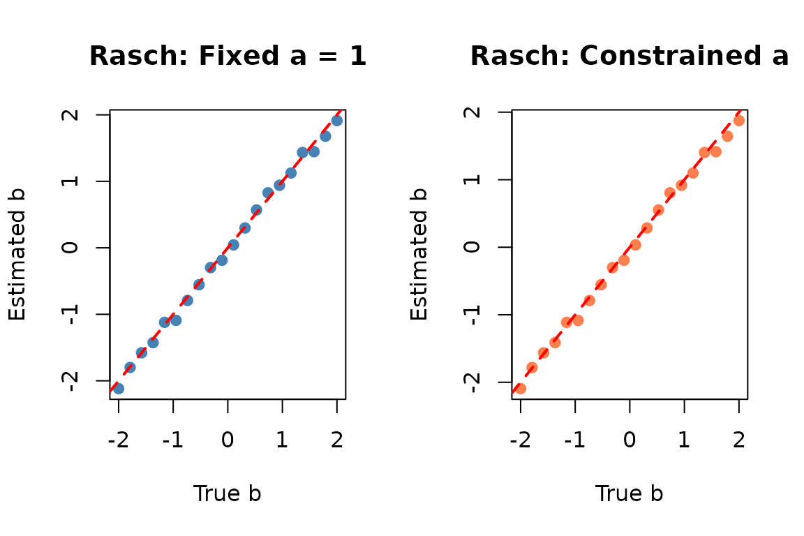
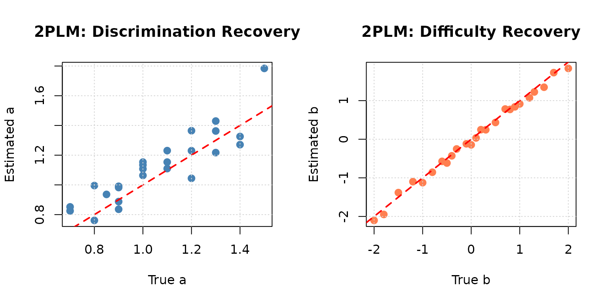
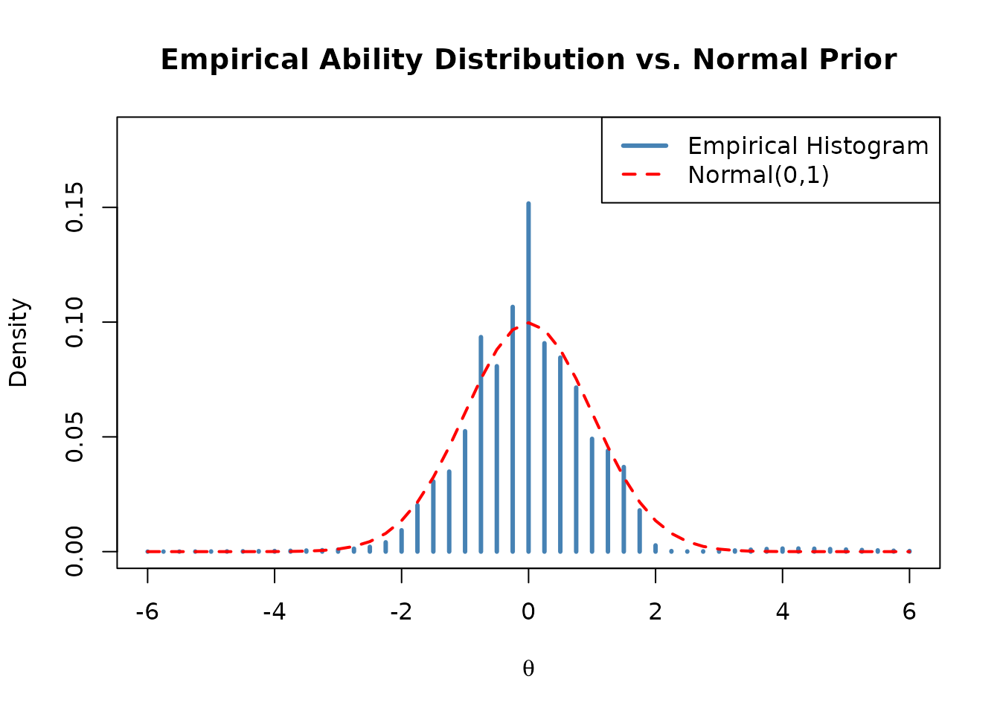
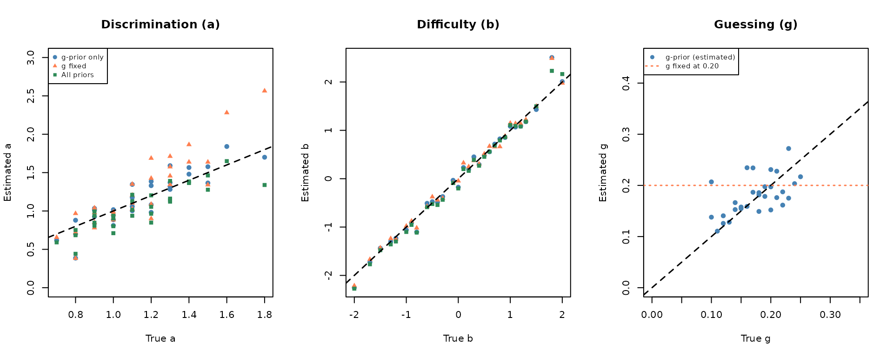
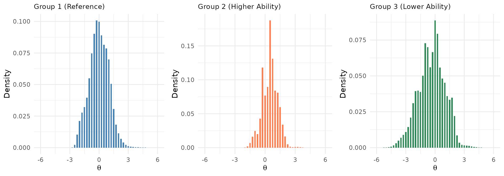

Item Parameter Estimation
Source:vignettes/articles/item-parameter-estimation.Rmd
item-parameter-estimation.RmdOverview
irtQ provides three functions for item parameter estimation, each suited to different testing scenarios:
Estimation Methods at a Glance
| Function | Method | Use Case | Typical Scenario |
|---|---|---|---|
est_irt() |
MMLE-EM | Fixed-form (i.e., linear test form) calibration | Calibrate a linear test form from scratch |
est_irt() + fipc=TRUE
|
MMLE-EM | Pretest calibration (Fixed item parameter calibration, FIPC) | Pre-equate new items using anchor items |
est_item() |
MLE | Pretest calibration (Fixed ability parameter calibration, FAPC) | Calibrate items using known examinee abilities |
est_mg() |
MMLE-EM | Multiple-group calibration | Link different forms across groups/grades |
All functions support mixed-format tests with
dichotomous and polytomous items. After estimation, use
getirt() to extract results, and summary() for
a compact overview.
Part 1: Fixed-Form Calibration with est_irt()
What is Fixed-Form Calibration?
Fixed-form calibration refers to estimating item parameters for a fixed test form (i.e., linear test form) administered to a single group of examinees. This is the foundation of IRT-based test development.
Key characteristics:
- All items are simultaneously calibrated using the same examinee sample
- The latent ability distribution () is estimated from the data
- Results in a single, unified measurement scale for all items
- Used for developing new test forms or establishing an initial item bank
When to use fixed-form calibration:
✅ Developing a new test from scratch
✅ Establishing the initial item bank for a testing program
✅ Calibrating a complete operational test form
✅ Validating a newly developed assessment
How est_irt() Works: MMLE-EM Algorithm
The est_irt() function implements the Marginal
Maximum Likelihood Estimation via the Expectation-Maximization
(MMLE-EM) algorithm (Bock & Aitkin,
1981).
To avoid the incidental parameter problem (where estimating individual ability leads to inconsistent item parameter estimates as the sample size grows), the algorithm treats as a random variable following a specific prior distribution, typically .
Note on Item Types: For clarity and simplicity, the mathematical formulation and explanations below are presented using dichotomous (binary) items, although the underlying logic seamlessly extends to polytomous item response models.
By integrating the latent variable out of the joint likelihood, we obtain the marginal log-likelihood of the observed data, where the item parameters () are the only parameters to be estimated:
where is the likelihood of observing examinee ’s response pattern given ability , and is the prior density function of the latent ability.
Using -point quadrature, this continuous integral is approximated by a discrete summation over quadrature points with prior weights (such as weights from a standard normal distribution):
To maximize this marginal log-likelihood, which is analytically
intractable due to the summation inside the logarithm,
est_irt() iteratively executes the following E-step and
M-step until convergence:
E-step (Expectation): Computing Artificial Sufficient Statistics
For each examinee response pattern , the algorithm first computes the posterior probability of at each quadrature point :
Using these individual posteriors, the algorithm aggregates data across all examinees to construct the artificial sufficient statistics for each quadrature point:
Expected number of examinees () at :
Expected number of correct responses () for item at :
M-step (Maximization): Item-by-Item Parameter Optimization
In the M-step, the algorithm treats and as fixed constants. By decoupling the joint likelihood, the parameters of each item can be updated independently (item-by-item) by maximizing the expected complete-data log-likelihood (the -function):
where
denotes the item parameter vector (e.g., slope
and difficulty
for the 2PL model) and
is the item response function. est_irt() numerically
optimizes this function for each item using Newton-Raphson or other
root-finding techniques.
Extension to Polytomous Items: While the formulation above uses dichotomous items for ease of illustration, the same underlying MMLE-EM framework generalizes to polytomous item response models (e.g., Graded Response Model, Generalized Partial Credit Model). For polytomous items, the expected complete-data log-likelihood incorporates multinomial category response probabilities and corresponding expected category frequencies for each category , maintaining the identical decoupling optimization structure.
Convergence
This two-step cycle (E and M) repeats. The algorithm terminates when
the maximum absolute change in item parameter estimates between
consecutive iterations is smaller than the convergence threshold
specified by the Etol argument.
Key advantages of MMLE-EM:
- Does not require individual ability estimates ( is “integrated out”)
- Handles missing data naturally
- Allows prior distributions on item parameters for numerical stability
Essential est_irt() Arguments
Data and Model Specification:
| Argument | Description |
|---|---|
data |
Response matrix (examinees × items); rows = examinees, columns = items |
model |
IRT model per item: "1PLM", "2PLM",
"3PLM", "GRM", "GPCM"
|
cats |
Number of response categories per item (2 for dichotomous) |
D |
Scaling constant (1 for logistic metric;
1.702 to approximate normal-ogive) |
item.id |
Optional character vector of item identifiers |
Prior Distribution for Ability (θ):
| Argument | Description |
|---|---|
group.mean |
Mean of the prior distribution (default = 0) |
group.var |
Variance of the prior distribution (default = 1) |
EmpHist |
If TRUE, estimate the empirical histogram of θ
(non-parametric prior) |
Quadrature |
Number and range of quadrature points: e.g., c(49, 6) =
49 points from −6 to 6 |
Model Constraints:
| Argument | Description |
|---|---|
fix.a.1pl |
If TRUE, fix 1PLM discrimination to
a.val.1pl; if FALSE (default), constrain equal
across items but estimate |
a.val.1pl |
Fixed value for 1PLM discrimination (default = 1) |
fix.g |
If TRUE, fix guessing parameter to g.val
for all 3PLM items |
g.val |
Fixed guessing value (default = 0.2) |
fix.a.gpcm |
If TRUE, GPCM becomes PCM (discrimination fixed to
a.val.gpcm) |
a.val.gpcm |
Fixed discrimination for PCM (default = 1) |
Priors on Item Parameters:
| Argument | Description |
|---|---|
use.aprior |
Apply log-normal prior to discrimination parameters |
use.bprior |
Apply normal prior to difficulty parameters |
use.gprior |
Apply beta prior to guessing parameters (recommended for 3PLM) |
aprior |
e.g., list(dist = "lnorm", params = c(0, 0.5))
|
bprior |
e.g., list(dist = "norm", params = c(0, 1))
|
gprior |
e.g., list(dist = "beta", params = c(4, 16)) — mean =
4/(4+16) = 0.2 |
Convergence Settings:
| Argument | Description |
|---|---|
Etol |
Convergence threshold (default = 1e-4). Use
0.001 for faster, slightly looser convergence |
MaxE |
Maximum number of EM iterations (default = 500) |
se |
If TRUE, compute item parameter standard errors |
Example 1: Rasch Model (1PLM) Calibration
The 1-parameter logistic model (1PLM), also known as the Rasch model, is the simplest IRT model for dichotomous items. It assumes:
- All items have equal discrimination (slopes)
- Items differ only in difficulty (location)
- No guessing (lower asymptote = 0)
Mathematical form:
where is constrained to be equal across all items (or fixed to 1).
Two ways to fit the Rasch model in irtQ:
-
fix.a.1pl = TRUE: Fix for all 1PLM items (strict Rasch) -
fix.a.1pl = FALSE(default): Constrain to be equal across 1PLM items but estimate the common value from the data
We demonstrate both approaches:
# ---- Step 1: Define item metadata for 20-item 1PLM test ----
# Difficulty parameters range from easy (−2) to hard (2)
meta_1pl <- shape_df(
par.drm = list(
a = rep(1, 20), # Discriminations set to 1 (for simulation)
b = seq(-2, 2, length.out = 20), # Difficulty from −2 to 2
g = rep(NA, 20) # No guessing (1PLM / 2PLM)
),
item.id = paste0("I", 1:20),
cats = 2,
model = "1PLM"
)
# ---- Step 2: Simulate 500 examinees from N(0, 1) ----
theta_1pl <- rnorm(500, mean = 0, sd = 1)
resp_1pl <- simdat(x = meta_1pl, theta = theta_1pl, D = 1.702)
# ---- Step 3a: Estimate with FIXED discrimination (a = 1) ----
# Strict Rasch: D×a×(θ−b) = 1.702×1×(θ−b)
mod_1pl_fixed <- est_irt(
data = resp_1pl,
D = 1.702,
model = "1PLM",
cats = 2,
item.id = paste0("I", 1:20),
fix.a.1pl = TRUE, # ← Fix discrimination to a.val.1pl (= 1)
a.val.1pl = 1, # ← a = 1 (strict Rasch parameterization)
EmpHist = FALSE, # Use fixed N(0,1) prior
Etol = 0.001,
MaxE = 200,
se = TRUE,
verbose = FALSE
)
summary(mod_1pl_fixed)
#>
#> Call:
#> est_irt(data = resp_1pl, D = 1.702, model = "1PLM", cats = 2,
#> item.id = paste0("I", 1:20), fix.a.1pl = TRUE, a.val.1pl = 1,
#> EmpHist = FALSE, Etol = 0.001, MaxE = 200, se = TRUE, verbose = FALSE)
#>
#> Summary of the Data
#> Number of Items: 20
#> Number of Cases: 500
#>
#> Summary of Estimation Process
#> Maximum number of EM cycles: 200
#> Convergence criterion of E-step: 0.001
#> Number of rectangular quadrature points: 49
#> Minimum & Maximum quadrature points: -6, 6
#> Number of free parameters: 20
#> Number of fixed items: 0
#> Number of E-step cycles completed: 6
#> Maximum parameter change: 6.362554e-06
#>
#> Processing time (in seconds)
#> EM algorithm: 0.15
#> Standard error computation: 0.02
#> Total computation: 0.2
#>
#> Convergence and Stability of Solution
#> First-order test: Convergence criteria are satisfied.
#> Second-order test: Solution is a possible local maximum.
#> Computation of variance-covariance matrix:
#> Variance-covariance matrix of item parameter estimates is obtainable.
#>
#> Summary of Estimation Results
#> -2loglikelihood: 8479.304
#> Akaike Information Criterion (AIC): 8519.304
#> Bayesian Information Criterion (BIC): 8603.597
#> Item Parameters:
#> id cats model par.1 se.1 par.2 se.2 par.3 se.3
#> 1 I1 2 1PLM 1 NA -2.12 0.13 NA NA
#> 2 I2 2 1PLM 1 NA -1.80 0.11 NA NA
#> 3 I3 2 1PLM 1 NA -1.58 0.10 NA NA
#> 4 I4 2 1PLM 1 NA -1.43 0.10 NA NA
#> 5 I5 2 1PLM 1 NA -1.12 0.09 NA NA
#> 6 I6 2 1PLM 1 NA -1.09 0.09 NA NA
#> 7 I7 2 1PLM 1 NA -0.79 0.09 NA NA
#> 8 I8 2 1PLM 1 NA -0.56 0.08 NA NA
#> 9 I9 2 1PLM 1 NA -0.30 0.08 NA NA
#> 10 I10 2 1PLM 1 NA -0.19 0.08 NA NA
#> 11 I11 2 1PLM 1 NA 0.04 0.08 NA NA
#> 12 I12 2 1PLM 1 NA 0.30 0.08 NA NA
#> 13 I13 2 1PLM 1 NA 0.57 0.08 NA NA
#> 14 I14 2 1PLM 1 NA 0.83 0.09 NA NA
#> 15 I15 2 1PLM 1 NA 0.94 0.09 NA NA
#> 16 I16 2 1PLM 1 NA 1.13 0.09 NA NA
#> 17 I17 2 1PLM 1 NA 1.43 0.10 NA NA
#> 18 I18 2 1PLM 1 NA 1.45 0.10 NA NA
#> 19 I19 2 1PLM 1 NA 1.68 0.10 NA NA
#> 20 I20 2 1PLM 1 NA 1.91 0.11 NA NA
#> Group Parameters:
#> mu sigma2 sigma
#> estimates 0 1 1
#> se NA NA NA
# Extract difficulty estimates
par_fixed <- getirt(mod_1pl_fixed, what = "par.est")
head(par_fixed)
#> id cats model par.1 par.2 par.3
#> 1 I1 2 1PLM 1 -2.117258 NA
#> 2 I2 2 1PLM 1 -1.799535 NA
#> 3 I3 2 1PLM 1 -1.578528 NA
#> 4 I4 2 1PLM 1 -1.425732 NA
#> 5 I5 2 1PLM 1 -1.120830 NA
#> 6 I6 2 1PLM 1 -1.091244 NA
# ---- Step 3b: Estimate with CONSTRAINED discrimination ----
# Discrimination is constrained equal across items but freely estimated
mod_1pl_constrained <- est_irt(
data = resp_1pl,
D = 1.702,
model = "1PLM",
cats = 2,
item.id = paste0("I", 1:20),
fix.a.1pl = FALSE, # ← Equal constraint, but a is estimated
EmpHist = FALSE,
Etol = 0.001,
MaxE = 200,
se = TRUE,
verbose = FALSE
)
summary(mod_1pl_constrained)
#>
#> Call:
#> est_irt(data = resp_1pl, D = 1.702, model = "1PLM", cats = 2,
#> item.id = paste0("I", 1:20), fix.a.1pl = FALSE, EmpHist = FALSE,
#> Etol = 0.001, MaxE = 200, se = TRUE, verbose = FALSE)
#>
#> Summary of the Data
#> Number of Items: 20
#> Number of Cases: 500
#>
#> Summary of Estimation Process
#> Maximum number of EM cycles: 200
#> Convergence criterion of E-step: 0.001
#> Number of rectangular quadrature points: 49
#> Minimum & Maximum quadrature points: -6, 6
#> Number of free parameters: 21
#> Number of fixed items: 0
#> Number of E-step cycles completed: 21
#> Maximum parameter change: 0.0007782085
#>
#> Processing time (in seconds)
#> EM algorithm: 0.13
#> Standard error computation: 0.09
#> Total computation: 0.23
#>
#> Convergence and Stability of Solution
#> First-order test: Convergence criteria are satisfied.
#> Second-order test: Solution is a possible local maximum.
#> Computation of variance-covariance matrix:
#> Variance-covariance matrix of item parameter estimates is obtainable.
#>
#> Summary of Estimation Results
#> -2loglikelihood: 8479.074
#> Akaike Information Criterion (AIC): 8521.074
#> Bayesian Information Criterion (BIC): 8609.581
#> Item Parameters:
#> id cats model par.1 se.1 par.2 se.2 par.3 se.3
#> 1 I1 2 1PLM 1.02 0.05 -2.09 0.15 NA NA
#> 2 I2 2 1PLM 1.02 NA -1.78 0.13 NA NA
#> 3 I3 2 1PLM 1.02 NA -1.56 0.12 NA NA
#> 4 I4 2 1PLM 1.02 NA -1.41 0.11 NA NA
#> 5 I5 2 1PLM 1.02 NA -1.11 0.10 NA NA
#> 6 I6 2 1PLM 1.02 NA -1.08 0.10 NA NA
#> 7 I7 2 1PLM 1.02 NA -0.79 0.09 NA NA
#> 8 I8 2 1PLM 1.02 NA -0.56 0.08 NA NA
#> 9 I9 2 1PLM 1.02 NA -0.30 0.08 NA NA
#> 10 I10 2 1PLM 1.02 NA -0.19 0.08 NA NA
#> 11 I11 2 1PLM 1.02 NA 0.04 0.08 NA NA
#> 12 I12 2 1PLM 1.02 NA 0.29 0.08 NA NA
#> 13 I13 2 1PLM 1.02 NA 0.55 0.08 NA NA
#> 14 I14 2 1PLM 1.02 NA 0.81 0.09 NA NA
#> 15 I15 2 1PLM 1.02 NA 0.92 0.09 NA NA
#> 16 I16 2 1PLM 1.02 NA 1.10 0.10 NA NA
#> 17 I17 2 1PLM 1.02 NA 1.40 0.11 NA NA
#> 18 I18 2 1PLM 1.02 NA 1.41 0.11 NA NA
#> 19 I19 2 1PLM 1.02 NA 1.64 0.12 NA NA
#> 20 I20 2 1PLM 1.02 NA 1.88 0.13 NA NA
#> Group Parameters:
#> mu sigma2 sigma
#> estimates 0 1 1
#> se NA NA NA
par_constrained <- getirt(mod_1pl_constrained, what = "par.est")
head(par_constrained)
#> id cats model par.1 par.2 par.3
#> 1 I1 2 1PLM 1.019657 -2.093318 NA
#> 2 I2 2 1PLM 1.019657 -1.780631 NA
#> 3 I3 2 1PLM 1.019657 -1.563083 NA
#> 4 I4 2 1PLM 1.019657 -1.412665 NA
#> 5 I5 2 1PLM 1.019657 -1.112475 NA
#> 6 I6 2 1PLM 1.019657 -1.083345 NA
# Note: par.1 (discrimination) is the same for all items, but its value
# is estimated from the data and may differ from 1
cat("Common discrimination estimate:", unique(par_constrained$par.1), "\n")
#> Common discrimination estimate: 1.019657
# ---- Compare difficulty recovery ----
par(mfrow = c(1, 2))
plot(meta_1pl$par.2, par_fixed$par.2,
xlab = "True b", ylab = "Estimated b",
main = "Rasch: Fixed a = 1",
pch = 19, col = "steelblue")
abline(0, 1, col = "red", lty = 2, lwd = 2)
plot(meta_1pl$par.2, par_constrained$par.2,
xlab = "True b", ylab = "Estimated b",
main = "Rasch: Constrained a",
pch = 19, col = "coral")
abline(0, 1, col = "red", lty = 2, lwd = 2)
Example 2: 2PLM Calibration with Parameter Recovery Analysis
We simulate a 25-item 2PLM test and examine how well
est_irt() recovers the true item parameters.
# ---- Step 1: Define item metadata ----
meta_bin <- shape_df(
par.drm = list(
a = c(0.8, 1.0, 1.2, 0.9, 1.4, 1.1, 0.7, 1.3, 1.0, 0.9,
1.2, 0.8, 1.5, 1.1, 0.9, 1.3, 0.7, 1.0, 1.2, 0.85,
1.0, 1.3, 0.9, 1.1, 1.4),
b = c(-2.0, -1.5, -1.0, -0.8, -0.5, -0.3, -0.1, 0.0, 0.2, 0.5,
0.8, 1.0, 1.2, 1.5, 2.0, -1.8, -0.6, 0.3, 0.9, 1.3,
-0.4, 0.1, 0.7, -1.2, 1.7),
g = rep(NA, 25) # No guessing (2PLM)
),
item.id = paste0("ITEM", 1:25),
cats = 2,
model = "2PLM"
)
# ---- Step 2: Simulate 600 examinees from N(0, 1) ----
theta_true <- rnorm(600, mean = 0, sd = 1)
resp_bin <- simdat(x = meta_bin, theta = theta_true, D = 1.702)
# ---- Step 3: Estimate item parameters ----
mod_bin <- est_irt(
data = resp_bin,
D = 1.702,
model = "2PLM",
cats = 2,
item.id = paste0("ITEM", 1:25),
EmpHist = FALSE, # Fix prior to N(0,1)
Etol = 0.001,
MaxE = 200,
se = TRUE,
verbose = FALSE
)
summary(mod_bin)
#>
#> Call:
#> est_irt(data = resp_bin, D = 1.702, model = "2PLM", cats = 2,
#> item.id = paste0("ITEM", 1:25), EmpHist = FALSE, Etol = 0.001,
#> MaxE = 200, se = TRUE, verbose = FALSE)
#>
#> Summary of the Data
#> Number of Items: 25
#> Number of Cases: 600
#>
#> Summary of Estimation Process
#> Maximum number of EM cycles: 200
#> Convergence criterion of E-step: 0.001
#> Number of rectangular quadrature points: 49
#> Minimum & Maximum quadrature points: -6, 6
#> Number of free parameters: 50
#> Number of fixed items: 0
#> Number of E-step cycles completed: 29
#> Maximum parameter change: 0.0009961947
#>
#> Processing time (in seconds)
#> EM algorithm: 0.7
#> Standard error computation: 0.02
#> Total computation: 0.73
#>
#> Convergence and Stability of Solution
#> First-order test: Convergence criteria are satisfied.
#> Second-order test: Solution is a possible local maximum.
#> Computation of variance-covariance matrix:
#> Variance-covariance matrix of item parameter estimates is obtainable.
#>
#> Summary of Estimation Results
#> -2loglikelihood: 12831.29
#> Akaike Information Criterion (AIC): 12931.29
#> Bayesian Information Criterion (BIC): 13151.13
#> Item Parameters:
#> id cats model par.1 se.1 par.2 se.2 par.3 se.3
#> 1 ITEM1 2 2PLM 0.76 0.11 -2.10 0.23 NA NA
#> 2 ITEM2 2 2PLM 1.11 0.14 -1.38 0.12 NA NA
#> 3 ITEM3 2 2PLM 1.04 0.12 -1.13 0.11 NA NA
#> 4 ITEM4 2 2PLM 0.99 0.12 -0.85 0.09 NA NA
#> 5 ITEM5 2 2PLM 1.33 0.14 -0.62 0.07 NA NA
#> 6 ITEM6 2 2PLM 1.11 0.11 -0.25 0.07 NA NA
#> 7 ITEM7 2 2PLM 0.85 0.09 -0.12 0.08 NA NA
#> 8 ITEM8 2 2PLM 1.36 0.14 -0.15 0.06 NA NA
#> 9 ITEM9 2 2PLM 1.06 0.12 0.25 0.07 NA NA
#> 10 ITEM10 2 2PLM 0.84 0.09 0.43 0.09 NA NA
#> 11 ITEM11 2 2PLM 1.23 0.13 0.77 0.08 NA NA
#> 12 ITEM12 2 2PLM 1.00 0.11 0.92 0.10 NA NA
#> 13 ITEM13 2 2PLM 1.78 0.23 1.07 0.08 NA NA
#> 14 ITEM14 2 2PLM 1.23 0.15 1.35 0.11 NA NA
#> 15 ITEM15 2 2PLM 0.98 0.15 1.83 0.18 NA NA
#> 16 ITEM16 2 2PLM 1.22 0.17 -1.95 0.17 NA NA
#> 17 ITEM17 2 2PLM 0.83 0.09 -0.57 0.09 NA NA
#> 18 ITEM18 2 2PLM 1.13 0.11 0.25 0.07 NA NA
#> 19 ITEM19 2 2PLM 1.36 0.15 0.84 0.08 NA NA
#> 20 ITEM20 2 2PLM 0.94 0.11 1.22 0.12 NA NA
#> 21 ITEM21 2 2PLM 1.15 0.12 -0.43 0.07 NA NA
#> 22 ITEM22 2 2PLM 1.43 0.15 0.03 0.06 NA NA
#> 23 ITEM23 2 2PLM 0.89 0.10 0.78 0.10 NA NA
#> 24 ITEM24 2 2PLM 1.15 0.13 -1.10 0.10 NA NA
#> 25 ITEM25 2 2PLM 1.27 0.21 1.73 0.15 NA NA
#> Group Parameters:
#> mu sigma2 sigma
#> estimates 0 1 1
#> se NA NA NAExtract estimated parameters and standard errors:
# Parameter estimates
est_par <- getirt(mod_bin, what = "par.est")
head(est_par)
#> id cats model par.1 par.2 par.3
#> 1 ITEM1 2 2PLM 0.7610749 -2.1024453 NA
#> 2 ITEM2 2 2PLM 1.1076322 -1.3823297 NA
#> 3 ITEM3 2 2PLM 1.0442989 -1.1251569 NA
#> 4 ITEM4 2 2PLM 0.9906667 -0.8549354 NA
#> 5 ITEM5 2 2PLM 1.3257440 -0.6162470 NA
#> 6 ITEM6 2 2PLM 1.1097074 -0.2519402 NA
# Standard errors
est_se <- getirt(mod_bin, what = "se.est")
head(est_se)
#> id cats model par.1 par.2 par.3
#> 1 ITEM1 2 2PLM 0.1092573 0.23149728 NA
#> 2 ITEM2 2 2PLM 0.1369576 0.11975584 NA
#> 3 ITEM3 2 2PLM 0.1235171 0.10566949 NA
#> 4 ITEM4 2 2PLM 0.1166167 0.09492443 NA
#> 5 ITEM5 2 2PLM 0.1395448 0.07349193 NA
#> 6 ITEM6 2 2PLM 0.1121319 0.07131893 NA
# Estimated latent distribution parameters (mean and variance)
getirt(mod_bin, what = "group.par")
#> mu sigma2 sigma
#> estimates 0 1 1
#> se NA NA NAParameter Recovery Analysis:
par(mfrow = c(1, 2))
# Discrimination recovery
plot(meta_bin$par.1, est_par$par.1,
xlab = "True a", ylab = "Estimated a",
main = "2PLM: Discrimination Recovery",
pch = 19, col = "steelblue", cex = 1.2)
abline(0, 1, col = "red", lty = 2, lwd = 2)
grid()
# Difficulty recovery
plot(meta_bin$par.2, est_par$par.2,
xlab = "True b", ylab = "Estimated b",
main = "2PLM: Difficulty Recovery",
pch = 19, col = "coral", cex = 1.2)
abline(0, 1, col = "red", lty = 2, lwd = 2)
grid()
cat("\n=== Parameter Recovery Statistics ===\n")
#>
#> === Parameter Recovery Statistics ===
cat("Discrimination RMSE:",
round(sqrt(mean((meta_bin$par.1 - est_par$par.1)^2)), 4), "\n")
#> Discrimination RMSE: 0.1208
cat("Difficulty RMSE:",
round(sqrt(mean((meta_bin$par.2 - est_par$par.2)^2)), 4), "\n")
#> Difficulty RMSE: 0.0937
cat("Discrimination r:", round(cor(meta_bin$par.1, est_par$par.1), 4), "\n")
#> Discrimination r: 0.8897
cat("Difficulty r:", round(cor(meta_bin$par.2, est_par$par.2), 4), "\n")
#> Difficulty r: 0.9972Example 3: Empirical Histogram Estimation
What does EmpHist = TRUE do?
Instead of assuming θ ~ N(μ, σ²), the EM algorithm estimates the
empirical density at each quadrature point using the
Woods (2007) method. The mean and variance
are still constrained to group.mean and
group.var for scale identification, but the
shape of the distribution is estimated freely from the
data.
When to use EmpHist = TRUE:
✅ Sample size is sufficiently large ✅ You suspect
the ability distribution is non-normal (e.g., bimodal,
skewed)
✅ You want to avoid strong distributional assumptions
`
# Estimate with empirical histogram
mod_bin_emp <- est_irt(
data = resp_bin,
D = 1.702,
model = "2PLM",
cats = 2,
item.id = paste0("ITEM", 1:25),
EmpHist = TRUE, # ← Estimate empirical distribution
group.mean = 0, # ← Mean constrained to 0 for identification
group.var = 1, # ← Variance constrained to 1 for identification
Etol = 0.001,
MaxE = 200,
se = TRUE,
verbose = FALSE
)
# Extract the estimated empirical distribution
emp_hist <- mod_bin_emp$weights
# Compare empirical estimate with the N(0,1) reference curve
theta_seq <- emp_hist$theta
norm_dens <- dnorm(theta_seq, mean = 0, sd = 1)
norm_dens <- norm_dens / sum(norm_dens) # Rescale to match histogram units
plot(emp_hist$theta, emp_hist$weight,
type = "h", lwd = 3, col = "steelblue",
xlab = expression(theta),
ylab = "Density",
main = "Empirical Ability Distribution vs. Normal Prior",
ylim = c(0, max(emp_hist$weight) * 1.2))
lines(theta_seq, norm_dens, col = "red", lty = 2, lwd = 2)
legend("topright",
legend = c("Empirical Histogram", "Normal(0,1)"),
col = c("steelblue", "red"),
lty = c(1, 2), lwd = c(3, 2))
Interpretation:
- A close match to the normal curve suggests the
normality assumption is reasonable;
EmpHist = FALSEis sufficient. -
Notable deviations (e.g., skewness, multimodality)
suggest that the empirical histogram captures real population structure
and
EmpHist = TRUEis preferred.
In this example, because the data were generated from N(0, 1), the empirical estimate closely follows the normal overlay.
Example 4: 3PLM Calibration — Priors and Guessing Parameter Options
The 3-parameter logistic model (3PLM) adds a lower-asymptote (guessing) parameter to the 2PLM:
where
is the pseudo-guessing parameter, the probability of a
correct response even at very low ability levels. Because
can be poorly identified with small samples (sometimes even with large
samples), there are two primary options for handling
in est_irt():
-
Estimate
with a Beta prior (
use.gprior = TRUE) — regularizes toward a plausible range (e.g., for a -option MC item), or -
Fix
at a constant value (
fix.g = TRUE,g.val = ...) — appropriate when the number of response options is known and guessing is assumed uniform.
In addition, priors on discrimination
()
and difficulty
()
can be applied via use.aprior and use.bprior.
These are especially useful when:
- The item discrimination estimates may be unstable
- Items with extreme difficulty values () pull toward unreasonable values
- You want to incorporate substantive prior knowledge (e.g., discriminations typically follow a log-normal distribution with certain parameters)
Priors for the item parameters of the 3PLM
| Parameter | Argument | Default Prior |
|---|---|---|
| Discrimination | aprior |
lnorm(0, 0.5) |
| Difficulty | bprior |
norm(0, 1) |
| Guessing | gprior |
beta(5, 16) |
We demonstrate three estimation strategies using the same simulated dataset:
-
Strategy A: Estimate
with
use.gprior = TRUE(standard approach) -
Strategy B: Fix
at a constant with
fix.g = TRUEandg.val = 0.2 -
Strategy C: Estimate
with full priors on
,
,
and
via
use.aprior,use.bprior, anduse.gprior
# ---- Define 30-item 3PLM metadata ----
# Discriminations in [0.7, 1.8], difficulties in [-2, 2], guessing in [0.10, 0.25]
set.seed(2026)
meta_3pl <- shape_df(
par.drm = list(
a = c(1.2, 0.9, 1.5, 1.1, 0.8, 1.4, 1.0, 1.3, 0.7, 1.2,
1.1, 1.6, 0.9, 1.3, 1.0, 1.8, 0.8, 1.2, 1.1, 0.9,
1.4, 1.0, 1.3, 0.8, 1.5, 1.1, 0.9, 1.2, 1.3, 1.0),
b = c(-2.0, -1.5, -1.2, -1.0, -0.8, -0.5, -0.3, -0.1, 0.0, 0.2,
0.4, 0.6, 0.8, 1.0, 1.2, 1.5, 1.8, 2.0, -1.7, -0.6,
0.1, 0.5, 0.9, 1.3, -1.3, -0.4, 0.3, 0.7, 1.1, -0.9),
g = c(0.15, 0.20, 0.10, 0.18, 0.22, 0.12, 0.25, 0.17, 0.20, 0.14,
0.19, 0.11, 0.23, 0.16, 0.21, 0.13, 0.24, 0.18, 0.15, 0.20,
0.10, 0.22, 0.17, 0.19, 0.12, 0.23, 0.16, 0.21, 0.14, 0.18)
),
item.id = paste0("ITEM", 1:30),
cats = 2,
model = "3PLM"
)
# Simulate 1000 examinees from N(0, 1)
theta_3pl <- rnorm(1000, mean = 0, sd = 1)
resp_3pl <- simdat(x = meta_3pl, theta = theta_3pl, D = 1.702)Strategy A: Estimate
with Beta Prior (use.gprior = TRUE)
This is the standard approach for 3PLM calibration in operational testing. The Beta(4, 16) prior assumes items have 5 response options (mean guessing = 0.2) and gently pulls extreme estimates back toward plausible values.
# Standard 3PLM calibration with Beta prior on guessing
# - Ability distribution fixed to N(0, 1)
# - Guessing parameter estimated with Beta(4, 16) prior
# (mean = 4/(4+16) = 0.2, appropriate for 5-option MC items)
mod_3pl_gprior <- est_irt(
data = resp_3pl,
D = 1.702,
model = "3PLM",
cats = 2,
item.id = paste0("ITEM", 1:30),
use.gprior = TRUE, # ← Apply prior to g
gprior = list(dist = "beta",
params = c(4, 16)), # ← Beta(4, 16): mean = 0.2
EmpHist = FALSE,
Etol = 0.001,
MaxE = 500,
se = TRUE,
verbose = FALSE
)
summary(mod_3pl_gprior)
#>
#> Call:
#> est_irt(data = resp_3pl, D = 1.702, model = "3PLM", cats = 2,
#> item.id = paste0("ITEM", 1:30), use.gprior = TRUE, gprior = list(dist = "beta",
#> params = c(4, 16)), EmpHist = FALSE, Etol = 0.001, MaxE = 500,
#> se = TRUE, verbose = FALSE)
#>
#> Summary of the Data
#> Number of Items: 30
#> Number of Cases: 1000
#>
#> Summary of Estimation Process
#> Maximum number of EM cycles: 500
#> Convergence criterion of E-step: 0.001
#> Number of rectangular quadrature points: 49
#> Minimum & Maximum quadrature points: -6, 6
#> Number of free parameters: 90
#> Number of fixed items: 0
#> Number of E-step cycles completed: 30
#> Maximum parameter change: 0.0009130637
#>
#> Processing time (in seconds)
#> EM algorithm: 1.44
#> Standard error computation: 0.02
#> Total computation: 1.49
#>
#> Convergence and Stability of Solution
#> First-order test: Convergence criteria are satisfied.
#> Second-order test: Solution is a possible local maximum.
#> Computation of variance-covariance matrix:
#> Variance-covariance matrix of item parameter estimates is obtainable.
#>
#> Summary of Estimation Results
#> -2loglikelihood: 30383.49
#> Akaike Information Criterion (AIC): 30563.49
#> Bayesian Information Criterion (BIC): 31005.19
#> Item Parameters:
#> id cats model par.1 se.1 par.2 se.2 par.3 se.3
#> 1 ITEM1 2 3PLM 1.08 0.17 -2.25 0.23 0.16 0.08
#> 2 ITEM2 2 3PLM 1.03 0.15 -1.44 0.19 0.20 0.09
#> 3 ITEM3 2 3PLM 1.36 0.19 -1.23 0.15 0.21 0.09
#> 4 ITEM4 2 3PLM 1.06 0.13 -1.06 0.15 0.15 0.07
#> 5 ITEM5 2 3PLM 0.70 0.09 -1.10 0.21 0.16 0.08
#> 6 ITEM6 2 3PLM 1.48 0.17 -0.48 0.09 0.13 0.05
#> 7 ITEM7 2 3PLM 1.02 0.16 -0.37 0.16 0.22 0.07
#> 8 ITEM8 2 3PLM 1.59 0.25 -0.03 0.09 0.23 0.04
#> 9 ITEM9 2 3PLM 0.62 0.09 -0.18 0.21 0.15 0.07
#> 10 ITEM10 2 3PLM 1.33 0.19 0.19 0.09 0.17 0.04
#> 11 ITEM11 2 3PLM 1.35 0.18 0.29 0.09 0.20 0.04
#> 12 ITEM12 2 3PLM 1.84 0.26 0.56 0.06 0.11 0.02
#> 13 ITEM13 2 3PLM 1.01 0.21 0.82 0.13 0.27 0.04
#> 14 ITEM14 2 3PLM 1.32 0.24 1.08 0.09 0.16 0.02
#> 15 ITEM15 2 3PLM 0.81 0.17 1.09 0.14 0.18 0.04
#> 16 ITEM16 2 3PLM 1.70 0.38 1.43 0.09 0.13 0.02
#> 17 ITEM17 2 3PLM 0.39 0.18 2.51 0.51 0.20 0.07
#> 18 ITEM18 2 3PLM 1.39 0.52 2.01 0.18 0.19 0.02
#> 19 ITEM19 2 3PLM 1.18 0.15 -1.73 0.16 0.15 0.08
#> 20 ITEM20 2 3PLM 1.02 0.15 -0.51 0.17 0.23 0.08
#> 21 ITEM21 2 3PLM 1.57 0.23 0.23 0.08 0.14 0.03
#> 22 ITEM22 2 3PLM 0.88 0.15 0.48 0.13 0.19 0.05
#> 23 ITEM23 2 3PLM 1.28 0.22 0.85 0.09 0.19 0.03
#> 24 ITEM24 2 3PLM 0.88 0.20 1.18 0.13 0.18 0.04
#> 25 ITEM25 2 3PLM 1.58 0.23 -1.30 0.12 0.14 0.07
#> 26 ITEM26 2 3PLM 1.00 0.13 -0.49 0.15 0.18 0.07
#> 27 ITEM27 2 3PLM 0.93 0.17 0.45 0.14 0.23 0.05
#> 28 ITEM28 2 3PLM 0.98 0.19 0.72 0.12 0.23 0.04
#> 29 ITEM29 2 3PLM 1.37 0.26 1.07 0.09 0.15 0.02
#> 30 ITEM30 2 3PLM 0.94 0.11 -0.91 0.17 0.18 0.08
#> Group Parameters:
#> mu sigma2 sigma
#> estimates 0 1 1
#> se NA NA NA
# Extract estimates
par_gprior <- getirt(mod_3pl_gprior, what = "par.est")
head(par_gprior)
#> id cats model par.1 par.2 par.3
#> 1 ITEM1 2 3PLM 1.0819558 -2.2541943 0.1576872
#> 2 ITEM2 2 3PLM 1.0340616 -1.4368948 0.1971448
#> 3 ITEM3 2 3PLM 1.3647746 -1.2314201 0.2068870
#> 4 ITEM4 2 3PLM 1.0589913 -1.0604277 0.1491037
#> 5 ITEM5 2 3PLM 0.6988575 -1.1031022 0.1614495
#> 6 ITEM6 2 3PLM 1.4798042 -0.4756583 0.1257347
# Guessing parameter estimates
cat("\nGuessing parameter range: [",
round(min(par_gprior$par.3), 3), ",",
round(max(par_gprior$par.3), 3), "]\n")
#>
#> Guessing parameter range: [ 0.111 , 0.272 ]
cat("Guessing parameter mean:", round(mean(par_gprior$par.3), 3), "\n")
#> Guessing parameter mean: 0.18Strategy B: Fix
at a Constant (fix.g = TRUE)
When the number of response options is fixed and uniform guessing is assumed, fixing simplifies the model and can improve the stability of and estimates, especially with smaller samples.
# 3PLM with fixed guessing parameters
# - All items have g fixed at 0.20 (appropriate for 5-option MC items)
# - No guessing parameter is estimated: saves computation and avoids instability
mod_3pl_fixg <- est_irt(
data = resp_3pl,
D = 1.702,
model = "3PLM",
cats = 2,
item.id = paste0("ITEM", 1:30),
fix.g = TRUE, # ← Fix all guessing parameters
g.val = 0.20, # ← Fixed at 0.20 (1/5 for 5-option MC)
EmpHist = FALSE,
Etol = 0.001,
MaxE = 500,
se = TRUE,
verbose = FALSE
)
summary(mod_3pl_fixg)
#>
#> Call:
#> est_irt(data = resp_3pl, D = 1.702, model = "3PLM", cats = 2,
#> item.id = paste0("ITEM", 1:30), fix.g = TRUE, g.val = 0.2,
#> EmpHist = FALSE, Etol = 0.001, MaxE = 500, se = TRUE, verbose = FALSE)
#>
#> Summary of the Data
#> Number of Items: 30
#> Number of Cases: 1000
#>
#> Summary of Estimation Process
#> Maximum number of EM cycles: 500
#> Convergence criterion of E-step: 0.001
#> Number of rectangular quadrature points: 49
#> Minimum & Maximum quadrature points: -6, 6
#> Number of free parameters: 60
#> Number of fixed items: 0
#> Number of E-step cycles completed: 32
#> Maximum parameter change: 0.0009903456
#>
#> Processing time (in seconds)
#> EM algorithm: 0.98
#> Standard error computation: 0.02
#> Total computation: 1.03
#>
#> Convergence and Stability of Solution
#> First-order test: Convergence criteria are satisfied.
#> Second-order test: Solution is a possible local maximum.
#> Computation of variance-covariance matrix:
#> Variance-covariance matrix of item parameter estimates is obtainable.
#>
#> Summary of Estimation Results
#> -2loglikelihood: 30444.25
#> Akaike Information Criterion (AIC): 30564.25
#> Bayesian Information Criterion (BIC): 30858.72
#> Item Parameters:
#> id cats model par.1 se.1 par.2 se.2 par.3 se.3
#> 1 ITEM1 2 3PLM 1.09 0.16 -2.21 0.20 0.2 NA
#> 2 ITEM2 2 3PLM 1.04 0.13 -1.43 0.12 0.2 NA
#> 3 ITEM3 2 3PLM 1.34 0.17 -1.25 0.09 0.2 NA
#> 4 ITEM4 2 3PLM 1.10 0.12 -0.98 0.09 0.2 NA
#> 5 ITEM5 2 3PLM 0.72 0.08 -1.02 0.12 0.2 NA
#> 6 ITEM6 2 3PLM 1.64 0.17 -0.38 0.06 0.2 NA
#> 7 ITEM7 2 3PLM 0.99 0.11 -0.40 0.07 0.2 NA
#> 8 ITEM8 2 3PLM 1.46 0.17 -0.09 0.06 0.2 NA
#> 9 ITEM9 2 3PLM 0.66 0.08 -0.05 0.09 0.2 NA
#> 10 ITEM10 2 3PLM 1.43 0.16 0.25 0.06 0.2 NA
#> 11 ITEM11 2 3PLM 1.35 0.15 0.30 0.06 0.2 NA
#> 12 ITEM12 2 3PLM 2.28 0.34 0.67 0.06 0.2 NA
#> 13 ITEM13 2 3PLM 0.78 0.10 0.66 0.09 0.2 NA
#> 14 ITEM14 2 3PLM 1.57 0.26 1.15 0.08 0.2 NA
#> 15 ITEM15 2 3PLM 0.88 0.12 1.14 0.11 0.2 NA
#> 16 ITEM16 2 3PLM 2.56 0.78 1.50 0.09 0.2 NA
#> 17 ITEM17 2 3PLM 0.38 0.09 2.49 0.50 0.2 NA
#> 18 ITEM18 2 3PLM 1.69 0.60 1.98 0.17 0.2 NA
#> 19 ITEM19 2 3PLM 1.21 0.14 -1.67 0.12 0.2 NA
#> 20 ITEM20 2 3PLM 0.98 0.11 -0.57 0.08 0.2 NA
#> 21 ITEM21 2 3PLM 1.86 0.24 0.33 0.05 0.2 NA
#> 22 ITEM22 2 3PLM 0.91 0.11 0.51 0.08 0.2 NA
#> 23 ITEM23 2 3PLM 1.34 0.18 0.88 0.07 0.2 NA
#> 24 ITEM24 2 3PLM 0.97 0.15 1.22 0.11 0.2 NA
#> 25 ITEM25 2 3PLM 1.64 0.23 -1.24 0.09 0.2 NA
#> 26 ITEM26 2 3PLM 1.03 0.11 -0.44 0.07 0.2 NA
#> 27 ITEM27 2 3PLM 0.85 0.10 0.37 0.08 0.2 NA
#> 28 ITEM28 2 3PLM 0.90 0.11 0.66 0.08 0.2 NA
#> 29 ITEM29 2 3PLM 1.71 0.31 1.14 0.08 0.2 NA
#> 30 ITEM30 2 3PLM 0.96 0.10 -0.88 0.09 0.2 NA
#> Group Parameters:
#> mu sigma2 sigma
#> estimates 0 1 1
#> se NA NA NA
par_fixg <- getirt(mod_3pl_fixg, what = "par.est")
# Confirm: all guessing parameters are exactly 0.20
cat("\nAll g values fixed at:", unique(par_fixg$par.3), "\n")
#>
#> All g values fixed at: 0.2Strategy C: Full Item Parameter Priors (use.aprior +
use.bprior + use.gprior)
For moderate sample sizes or when item parameters are expected to be extreme, applying priors on all three parameters simultaneously can improve estimation stability.
# 3PLM with priors on all three parameters
# Priors used:
# a ~ LogNormal(0, 0.5): median = exp(0) = 1, ~95% of mass in [0.37, 2.72]
# b ~ Normal(0, 1): centers difficulties near 0 ± 2
# g ~ Beta(4, 16): mean = 0.20, for 5-option MC items
mod_3pl_allprior <- est_irt(
data = resp_3pl,
D = 1.702,
model = "3PLM",
cats = 2,
item.id = paste0("ITEM", 1:30),
use.aprior = TRUE, # ← Apply prior to a
aprior = list(dist = "lnorm",
params = c(0, 0.5)), # ← LogNormal(0, 0.5)
use.bprior = TRUE, # ← Apply prior to b
bprior = list(dist = "norm",
params = c(0, 1)), # ← Normal(0, 1)
use.gprior = TRUE, # ← Apply prior to g
gprior = list(dist = "beta",
params = c(4, 16)), # ← Beta(4, 16)
EmpHist = FALSE,
Etol = 0.001,
MaxE = 500,
se = TRUE,
verbose = FALSE
)
summary(mod_3pl_allprior)
#>
#> Call:
#> est_irt(data = resp_3pl, D = 1.702, model = "3PLM", cats = 2,
#> item.id = paste0("ITEM", 1:30), use.aprior = TRUE, use.bprior = TRUE,
#> use.gprior = TRUE, aprior = list(dist = "lnorm", params = c(0,
#> 0.5)), bprior = list(dist = "norm", params = c(0, 1)),
#> gprior = list(dist = "beta", params = c(4, 16)), EmpHist = FALSE,
#> Etol = 0.001, MaxE = 500, se = TRUE, verbose = FALSE)
#>
#> Summary of the Data
#> Number of Items: 30
#> Number of Cases: 1000
#>
#> Summary of Estimation Process
#> Maximum number of EM cycles: 500
#> Convergence criterion of E-step: 0.001
#> Number of rectangular quadrature points: 49
#> Minimum & Maximum quadrature points: -6, 6
#> Number of free parameters: 90
#> Number of fixed items: 0
#> Number of E-step cycles completed: 26
#> Maximum parameter change: 0.0008924307
#>
#> Processing time (in seconds)
#> EM algorithm: 2.07
#> Standard error computation: 0.02
#> Total computation: 2.12
#>
#> Convergence and Stability of Solution
#> First-order test: Convergence criteria are satisfied.
#> Second-order test: Solution is a possible local maximum.
#> Computation of variance-covariance matrix:
#> Variance-covariance matrix of item parameter estimates is obtainable.
#>
#> Summary of Estimation Results
#> -2loglikelihood: 30394.46
#> Akaike Information Criterion (AIC): 30574.46
#> Bayesian Information Criterion (BIC): 31016.16
#> Item Parameters:
#> id cats model par.1 se.1 par.2 se.2 par.3 se.3
#> 1 ITEM1 2 3PLM 1.05 0.16 -2.27 0.24 0.17 0.09
#> 2 ITEM2 2 3PLM 0.99 0.14 -1.48 0.19 0.20 0.09
#> 3 ITEM3 2 3PLM 1.28 0.18 -1.30 0.15 0.19 0.09
#> 4 ITEM4 2 3PLM 1.01 0.13 -1.10 0.15 0.15 0.07
#> 5 ITEM5 2 3PLM 0.68 0.08 -1.11 0.22 0.17 0.08
#> 6 ITEM6 2 3PLM 1.36 0.16 -0.52 0.09 0.11 0.05
#> 7 ITEM7 2 3PLM 0.94 0.14 -0.44 0.17 0.20 0.07
#> 8 ITEM8 2 3PLM 1.39 0.22 -0.09 0.10 0.21 0.05
#> 9 ITEM9 2 3PLM 0.59 0.08 -0.20 0.21 0.15 0.07
#> 10 ITEM10 2 3PLM 1.20 0.17 0.16 0.09 0.15 0.04
#> 11 ITEM11 2 3PLM 1.21 0.17 0.27 0.10 0.18 0.04
#> 12 ITEM12 2 3PLM 1.65 0.24 0.56 0.06 0.10 0.02
#> 13 ITEM13 2 3PLM 0.85 0.17 0.79 0.15 0.25 0.05
#> 14 ITEM14 2 3PLM 1.14 0.21 1.11 0.10 0.15 0.03
#> 15 ITEM15 2 3PLM 0.71 0.14 1.08 0.15 0.16 0.05
#> 16 ITEM16 2 3PLM 1.34 0.29 1.50 0.10 0.12 0.02
#> 17 ITEM17 2 3PLM 0.44 0.14 2.23 0.34 0.20 0.06
#> 18 ITEM18 2 3PLM 0.96 0.32 2.16 0.23 0.17 0.02
#> 19 ITEM19 2 3PLM 1.13 0.14 -1.77 0.17 0.16 0.08
#> 20 ITEM20 2 3PLM 0.94 0.13 -0.59 0.18 0.21 0.08
#> 21 ITEM21 2 3PLM 1.38 0.20 0.20 0.08 0.12 0.04
#> 22 ITEM22 2 3PLM 0.80 0.13 0.45 0.14 0.17 0.05
#> 23 ITEM23 2 3PLM 1.12 0.19 0.86 0.10 0.17 0.03
#> 24 ITEM24 2 3PLM 0.75 0.16 1.18 0.14 0.16 0.04
#> 25 ITEM25 2 3PLM 1.46 0.21 -1.36 0.13 0.13 0.07
#> 26 ITEM26 2 3PLM 0.94 0.12 -0.54 0.15 0.16 0.07
#> 27 ITEM27 2 3PLM 0.81 0.14 0.39 0.16 0.21 0.06
#> 28 ITEM28 2 3PLM 0.85 0.16 0.69 0.14 0.20 0.05
#> 29 ITEM29 2 3PLM 1.16 0.22 1.09 0.09 0.14 0.03
#> 30 ITEM30 2 3PLM 0.90 0.11 -0.95 0.17 0.17 0.08
#> Group Parameters:
#> mu sigma2 sigma
#> estimates 0 1 1
#> se NA NA NA
par_allprior <- getirt(mod_3pl_allprior, what = "par.est")
head(par_allprior)
#> id cats model par.1 par.2 par.3
#> 1 ITEM1 2 3PLM 1.0548098 -2.273570 0.1703295
#> 2 ITEM2 2 3PLM 0.9933247 -1.477971 0.1980235
#> 3 ITEM3 2 3PLM 1.2765580 -1.297860 0.1913214
#> 4 ITEM4 2 3PLM 1.0147194 -1.101043 0.1453921
#> 5 ITEM5 2 3PLM 0.6841509 -1.113656 0.1681469
#> 6 ITEM6 2 3PLM 1.3644398 -0.522827 0.1112316Comparing the Three Strategies
# Compare parameter recovery across the three strategies
par(mfrow = c(1, 3))
# --- Discrimination (a) ---
plot(meta_3pl$par.1, par_gprior$par.1,
xlab = "True a", ylab = "Estimated a",
main = "Discrimination (a)",
pch = 19, col = "steelblue", cex = 0.9, ylim = c(0, 3))
points(meta_3pl$par.1, par_fixg$par.1,
pch = 17, col = "coral", cex = 0.9)
points(meta_3pl$par.1, par_allprior$par.1,
pch = 15, col = "seagreen", cex = 0.9)
abline(0, 1, col = "black", lty = 2, lwd = 1.5)
legend("topleft", cex = 0.75,
legend = c("g-prior only", "g fixed", "All priors"),
col = c("steelblue", "coral", "seagreen"),
pch = c(19, 17, 15))
# --- Difficulty (b) ---
plot(meta_3pl$par.2, par_gprior$par.2,
xlab = "True b", ylab = "Estimated b",
main = "Difficulty (b)",
pch = 19, col = "steelblue", cex = 0.9)
points(meta_3pl$par.2, par_fixg$par.2,
pch = 17, col = "coral", cex = 0.9)
points(meta_3pl$par.2, par_allprior$par.2,
pch = 15, col = "seagreen", cex = 0.9)
abline(0, 1, col = "black", lty = 2, lwd = 1.5)
# --- Guessing (g) ---
plot(meta_3pl$par.3, par_gprior$par.3,
xlab = "True g", ylab = "Estimated g",
main = "Guessing (g)",
pch = 19, col = "steelblue", cex = 0.9,
xlim = c(0, 0.35), ylim = c(0, 0.45))
abline(0, 1, col = "black", lty = 2, lwd = 1.5)
abline(h = 0.20, col = "coral", lty = 3, lwd = 1.5)
legend("topleft", cex = 0.75,
legend = c("g-prior (estimated)", "g fixed at 0.20"),
col = c("steelblue", "coral"),
pch = c(19, NA), lty = c(NA, 3), lwd = c(NA, 1.5))
# Recovery statistics
cat("\n=== 3PLM Recovery Statistics ===\n")
#>
#> === 3PLM Recovery Statistics ===
cat(sprintf("%-25s %8s %8s %8s\n", "Strategy", "RMSE(a)", "RMSE(b)", "RMSE(g)"))
#> Strategy RMSE(a) RMSE(b) RMSE(g)
cat(sprintf("%-25s %8.4f %8.4f %8.4f\n", "A: g-prior only",
sqrt(mean((meta_3pl$par.1 - par_gprior$par.1)^2)),
sqrt(mean((meta_3pl$par.2 - par_gprior$par.2)^2)),
sqrt(mean((meta_3pl$par.3 - par_gprior$par.3)^2))))
#> A: g-prior only 0.1526 0.1652 0.0373
cat(sprintf("%-25s %8.4f %8.4f %8s\n", "B: g fixed",
sqrt(mean((meta_3pl$par.1 - par_fixg$par.1)^2)),
sqrt(mean((meta_3pl$par.2 - par_fixg$par.2)^2)), "(fixed)"))
#> B: g fixed 0.2819 0.1571 (fixed)
cat(sprintf("%-25s %8.4f %8.4f %8.4f\n", "C: All priors",
sqrt(mean((meta_3pl$par.1 - par_allprior$par.1)^2)),
sqrt(mean((meta_3pl$par.2 - par_allprior$par.2)^2)),
sqrt(mean((meta_3pl$par.3 - par_allprior$par.3)^2))))
#> C: All priors 0.1744 0.1389 0.0350Interpretation:
-
Strategy A (
use.gprior = TRUE): The Beta prior on prevents implausibly large guessing estimates while allowing item-level variation in . This is the recommended default for 5-option multiple-choice tests. -
Strategy B (
fix.g = TRUE): Fixing reduces the number of free parameters by 30 (one per item), which can improve and recovery when samples are moderate. Use when you are confident all items have the same guessing probability. - Strategy C (all priors): Providing priors on and as well adds additional regularization. This is most beneficial when item parameters are expected to be extreme (e.g., very easy or very hard items, or unusually high discrimination). For most operational settings with , the differences from Strategy A are small.
Practical guideline: For multiple-choice tests, start with
use.gprior = TRUEwith an appropriate Beta prior. Adduse.aprioranduse.bprioronly if estimates are unstable or extreme. Usefix.g = TRUEwhen the test design mandates a known guessing level.
Example 5: Mixed-Format Test (3PLM + GRM)
We now calibrate a mixed-format test containing:
- 15 dichotomous items modeled with 3PLM
- 5 polytomous items modeled with GRM (4 categories each, scored 0–3)
Understanding GRM Parameters
For a GRM item with K = 4 score categories (0, 1, 2, 3), the model uses:
- a: Discrimination parameter — shared across all category boundaries
- b₁, b₂, b₃: Boundary threshold parameters for category boundaries 1, 2, 3, respectively
Specifically, is the point on the θ-scale where the cumulative response function reaches 0.5 for category or higher:
Critical requirement: Thresholds must be strictly ordered: b₁ < b₂ < b₃
In shape_df(), GRM thresholds are specified as a
list of numeric vectors:
par.prm = list(
a = c(1.5, 1.2, ...), # Discrimination for each GRM item
d = list(
c(-1.5, -0.3, 0.8), # Item 1: b₁, b₂, b₃
c(-1.2, 0.0, 1.1), # Item 2
...
)
)Note on GPCM parameterization: For GPCM items, the threshold parameters stored in
par.2,par.3, … represent , where is the item location and is the step difficulty for category boundary . This parameterization differs from the GRM.
Full Example
# ---- Step 1: Define mixed-format metadata ----
meta_mix <- shape_df(
# 15 dichotomous 3PLM items
par.drm = list(
a = c(1.0, 1.2, 0.8, 1.4, 1.1, 0.9, 1.3, 1.0, 0.7, 1.2,
0.85, 1.1, 1.3, 0.9, 1.0),
b = c(-1.5, -1.0, -0.5, -0.2, 0.0, 0.3, 0.6, 0.9, 1.2, 1.5,
-0.8, 0.1, 0.5, 1.0, -1.2),
g = rep(0.15, 15) # Guessing parameter for 3PLM
),
# 5 polytomous GRM items (4 categories each)
par.prm = list(
a = c(1.5, 1.2, 0.9, 1.3, 1.0),
d = list(
c(-1.5, -0.3, 0.8), # Item 16: b₁ < b₂ < b₃
c(-1.2, 0.0, 1.1), # Item 17
c(-0.8, 0.5, 1.4), # Item 18
c(-1.0, -0.2, 0.9), # Item 19
c(-1.3, 0.2, 1.2) # Item 20
)
),
item.id = c(paste0("DRM", 1:15), paste0("GRM", 1:5)),
cats = c(rep(2, 15), rep(4, 5)),
model = c(rep("3PLM", 15), rep("GRM", 5))
)
# ---- Step 2: Simulate 1000 examinees ----
theta_mix <- rnorm(1000, mean = 0, sd = 1)
resp_mix <- simdat(x = meta_mix, theta = theta_mix, D = 1.702)
# ---- Step 3: Estimate parameters ----
mod_mix <- est_irt(
data = resp_mix,
D = 1.702,
model = c(rep("3PLM", 15), rep("GRM", 5)),
cats = c(rep(2, 15), rep(4, 5)),
item.id = c(paste0("DRM", 1:15), paste0("GRM", 1:5)),
use.gprior = TRUE,
gprior = list(dist = "beta", params = c(4, 16)),
EmpHist = FALSE,
Etol = 0.001,
MaxE = 200,
se = TRUE,
verbose = FALSE
)
summary(mod_mix)
#>
#> Call:
#> est_irt(data = resp_mix, D = 1.702, model = c(rep("3PLM", 15),
#> rep("GRM", 5)), cats = c(rep(2, 15), rep(4, 5)), item.id = c(paste0("DRM",
#> 1:15), paste0("GRM", 1:5)), use.gprior = TRUE, gprior = list(dist = "beta",
#> params = c(4, 16)), EmpHist = FALSE, Etol = 0.001, MaxE = 200,
#> se = TRUE, verbose = FALSE)
#>
#> Summary of the Data
#> Number of Items: 20
#> Number of Cases: 1000
#>
#> Summary of Estimation Process
#> Maximum number of EM cycles: 200
#> Convergence criterion of E-step: 0.001
#> Number of rectangular quadrature points: 49
#> Minimum & Maximum quadrature points: -6, 6
#> Number of free parameters: 65
#> Number of fixed items: 0
#> Number of E-step cycles completed: 18
#> Maximum parameter change: 0.0009697275
#>
#> Processing time (in seconds)
#> EM algorithm: 0.69
#> Standard error computation: 0.02
#> Total computation: 0.72
#>
#> Convergence and Stability of Solution
#> First-order test: Convergence criteria are satisfied.
#> Second-order test: Solution is a possible local maximum.
#> Computation of variance-covariance matrix:
#> Variance-covariance matrix of item parameter estimates is obtainable.
#>
#> Summary of Estimation Results
#> -2loglikelihood: 26804.18
#> Akaike Information Criterion (AIC): 26934.18
#> Bayesian Information Criterion (BIC): 27253.19
#> Item Parameters:
#> id cats model par.1 se.1 par.2 se.2 par.3 se.3 par.4 se.4
#> 1 DRM1 2 3PLM 0.89 0.10 -1.72 0.19 0.16 0.08 NA NA
#> 2 DRM2 2 3PLM 1.26 0.17 -0.94 0.15 0.22 0.08 NA NA
#> 3 DRM3 2 3PLM 0.80 0.12 -0.42 0.20 0.21 0.08 NA NA
#> 4 DRM4 2 3PLM 1.31 0.14 -0.38 0.08 0.10 0.04 NA NA
#> 5 DRM5 2 3PLM 1.14 0.14 -0.09 0.10 0.13 0.05 NA NA
#> 6 DRM6 2 3PLM 0.90 0.12 0.09 0.13 0.14 0.05 NA NA
#> 7 DRM7 2 3PLM 1.15 0.16 0.53 0.08 0.14 0.03 NA NA
#> 8 DRM8 2 3PLM 1.31 0.21 0.84 0.07 0.14 0.03 NA NA
#> 9 DRM9 2 3PLM 0.61 0.11 1.00 0.15 0.11 0.05 NA NA
#> 10 DRM10 2 3PLM 1.25 0.25 1.28 0.09 0.14 0.02 NA NA
#> 11 DRM11 2 3PLM 0.98 0.13 -0.70 0.17 0.21 0.08 NA NA
#> 12 DRM12 2 3PLM 1.08 0.13 -0.03 0.10 0.14 0.05 NA NA
#> 13 DRM13 2 3PLM 1.34 0.20 0.51 0.08 0.17 0.03 NA NA
#> 14 DRM14 2 3PLM 0.81 0.16 1.12 0.12 0.14 0.04 NA NA
#> 15 DRM15 2 3PLM 1.16 0.13 -1.24 0.14 0.16 0.08 NA NA
#> 16 GRM1 4 GRM 1.50 0.15 -1.60 0.13 -0.38 0.07 0.74 0.08
#> 17 GRM2 4 GRM 1.20 0.12 -1.22 0.12 -0.06 0.08 0.98 0.11
#> 18 GRM3 4 GRM 0.86 0.10 -0.99 0.13 0.32 0.10 1.32 0.16
#> 19 GRM4 4 GRM 1.35 0.14 -1.05 0.10 -0.29 0.07 0.78 0.09
#> 20 GRM5 4 GRM 0.97 0.11 -1.44 0.16 0.21 0.09 1.19 0.14
#> Group Parameters:
#> mu sigma2 sigma
#> estimates 0 1 1
#> se NA NA NAExtract and verify GRM estimates:
est_mix <- getirt(mod_mix, what = "par.est")
# GRM items are rows 16–20
grm_items <- est_mix[16:20, ]
print(grm_items)
#> id cats model par.1 par.2 par.3 par.4
#> 16 GRM1 4 GRM 1.4970445 -1.5990844 -0.3831622 0.7389184
#> 17 GRM2 4 GRM 1.1982492 -1.2189951 -0.0597471 0.9764486
#> 18 GRM3 4 GRM 0.8624778 -0.9863726 0.3220696 1.3210167
#> 19 GRM4 4 GRM 1.3514258 -1.0549108 -0.2851181 0.7755233
#> 20 GRM5 4 GRM 0.9677380 -1.4361120 0.2095088 1.1893979
# For GRM items:
# - par.1: discrimination (a)
# - par.2, par.3, par.4: boundary thresholds (b₁, b₂, b₃)Practical Tips for Fixed-Form Calibration
Q: How many examinees do I need?
| Model | Minimum N | Recommended N | Notes |
|---|---|---|---|
| 1PLM | 100 | 200+ | Only estimating difficulties |
| 2PLM | 250 | 500+ | Estimating both a and b |
| 3PLM | 500 | 1000+ | Guessing parameter is hard to estimate with small N |
| GRM, GPCM | 300 | 500+ | Depends on number of categories |
Q: My EM algorithm isn’t converging. What should I do?
-
Increase
MaxE: TryMaxE = 1000 -
Relax
Etol: TryEtol = 0.005 - Check your data: Are there items with extreme proportions ( or )? Very easy or very hard items may cause instability.
-
Use priors: Enable
use.aprior = TRUE,use.bprior = TRUE, oruse.gprior = TRUE
Q: Should I use EmpHist = TRUE or
FALSE?
| Option | Typical Use | Pros | Cons |
|---|---|---|---|
EmpHist = FALSE |
Small samples, normal population | Faster, stable | Assumes normality of θ |
EmpHist = TRUE |
Large samples, non-normal population | Flexible, data-driven | Slower, unstable with small N |
Part 2: Pretest Calibration — FIPC
Why Fixed Item Parameter Calibration (FIPC)?
In operational testing, introducing new items (pretest items) into an existing, calibrated item bank is a continuous necessity. However, doing so without disrupting the established measurement scale poses a challenge. Traditional concurrent calibration requires re-estimating all operational and pretest items together. For large-scale item banks, this concurrent approach is not only computationally expensive but also risks causing scale drift—unwanted shifts in the parameters of already established operational items.
FIPC effectively resolves this dilemma by:
- Fixing the parameters of operational (anchor) items at their bank values during calibration.
- Estimating only the parameters of the new pretest items.
- Automatically placing the new items directly onto the existing measurement scale of the item bank.
This approach is highly essential for:
- Pre-equating new test forms to predict form characteristics before operational administration.
- Continuous Item Banking—systematically updating and expanding a measurement pool.
- Eliminating Post-hoc Linking—obviating the need for separate, labor-intensive equating studies.
- Online Pretest Calibration in CAT—calibrating new items interspersed within a Computerized Adaptive Testing (CAT) environment without taking the operational pool offline or altering its scale.
How FIPC Places Items on the Existing Scale
FIPC utilizes the response data from the fixed operational items to estimate the latent trait () distribution of the new examinee group, thereby establishing the link to the existing scale.
Scenario A: Linear Test Forms (Group-level Linking)
- Group X (Old Form): Takes 20 operational items Calibrated Scale established at .
-
Group Y (New Form): Takes a combination of fixed
anchor items and new pretest items.
- Anchor Items (e.g., 12 items carried over from the old form): Parameters are fixed at the values calibrated from Group X.
- Pretest Items (e.g., 8 new items): Parameters are estimated.
- Scale Alignment: Group Y’s ability distribution (mean and variance) is estimated based on the fixed anchor items. Consequently, the new pretest items are automatically calibrated directly onto Group X’s scale (the item bank scale).
Scenario B: Computerized Adaptive Testing (Individual-level Anchoring)
In a CAT environment, FIPC functions as a powerful online calibration method. Because each examinee receives a unique, adapted set of operational items, there is no single fixed “form.” Instead:
- The unique set of operational items encountered by each examinee serves as their personalized anchor set.
- While the examinee population distribution is estimated via the EM algorithm using these fixed operational items, the interspersed pretest items (which are administered randomly and do not affect the examinee’s score) accumulate responses.
- FIPC then calibrates these pretest items directly onto the operational item bank scale, ensuring that the CAT pool can expand continuously without scale drift.
Key Insight: Whether through a fixed linear anchor form or a personalized CAT path, the operational items “tell” the calibration system exactly how the new examinee sample compares to the original population. This allows pretest items to inherit the item bank scale immediately.
Note: While FIPC preserves the scale rigorously by integrating out the latent trait distribution through EM iterations, it can be computationally intensive in real-time CAT settings. A computationally streamlined alternative is FAPC, which fixes individual ability estimates instead of item parameters, as detailed in Part 3.
Two FIPC Methods in irtQ
Kim (2006) proposed and evaluated
several variants of FIPC within the MMLE-EM framework. Among these, two
methods are implemented in est_irt():
| Method | Description | Notes |
|---|---|---|
| OEM | One EM cycle: one E-step using anchor items only, then one M-step for pretest items | Fast; one-pass approach |
| MEM | Multiple EM cycles: iterate between E-step and M-step until convergence | More stable; recommended |
Recommendation: Use fipc.method = "MEM"
unless there is any specific reason to prefer the one-pass OEM method.
Ban et al. (2001) showed that MEM tends to
produce the smallest item-parameter estimation errors across all
sample-size conditions.
FIPC Workflow in irtQ
Step 1: Calibrate the old (operational) form
mod_old <- est_irt(
data = old_responses,
model = "2PLM",
cats = 2,
D = 1.702,
...
)
# Extract calibrated parameters — these become the anchors
meta_anchor <- getirt(mod_old, what = "par.est")Step 2: Build new form metadata with
shape_df_fipc()
shape_df_fipc() takes the anchor item metadata and
combines it with placeholder rows for the pretest items:
# New form: 12 anchor items (fixed) + 8 pretest items (to estimate) = 20 items
# Anchor items will be placed at positions 1:12 in the new form
meta_fipc <- shape_df_fipc(
x = meta_anchor, # Anchor item metadata (full parameter specification)
fix.loc = 1:12, # Row positions of anchor items in the new form
item.id = paste0("NI", 1:8), # IDs for 8 pretest items
cats = 2,
model = "2PLM"
)Step 3: Administer new form to Group Y and run FIPC
mod_fipc <- est_irt(
x = meta_fipc,
data = new_responses,
D = 1.702,
fipc = TRUE, # ← Enable FIPC
fipc.method = "MEM", # ← Multiple EM cycles
fix.loc = 1:12, # ← Positions of anchor items
EmpHist = TRUE, # ← Estimate Group Y's ability distribution
verbose = FALSE
)Result:
- Pretest items are calibrated on Group X’s scale
- Group Y’s ability distribution is estimated: e.g., N(0.3, 1.1)
- No post-hoc linking needed
Example 1: Dichotomous Test FIPC
We demonstrate FIPC with a dichotomous test in a realistic pre-equating scenario:
- Old form (Group X): 20 items, examinees
- New form (Group Y): Items 1–15 are anchor items (fixed) + Items 16–20 are pretest items (to estimate); examinees
# ---- Step 1: Calibrate old form (20 items, 2PLM) ----
meta_old <- shape_df(
par.drm = list(
a = c(0.9, 1.1, 1.3, 0.8, 1.2, 1.0, 1.4, 0.85, 1.1, 0.9,
1.2, 0.7, 1.0, 1.3, 0.9, 1.1, 0.8, 1.5, 1.0, 1.2),
b = c(-1.8, -1.2, -0.7, -0.3, 0.0, 0.3, 0.7, 1.0, 1.3, 1.8,
-1.5, -0.5, 0.2, 0.6, 1.0, -1.0, 0.4, 0.9, -0.2, 1.5),
g = rep(NA, 20)
),
item.id = paste0("OI", 1:20), # "OI" = Old Item
cats = 2,
model = "2PLM"
)
# Simulate Group X (old form takers): N(0, 1)
theta_old <- rnorm(600, mean = 0, sd = 1)
resp_old <- simdat(x = meta_old, theta = theta_old, D = 1.702)
# Calibrate old form
mod_old <- est_irt(
data = resp_old,
D = 1.702,
model = "2PLM",
cats = 2,
item.id = paste0("OI", 1:20),
EmpHist = TRUE,
Etol = 0.001,
MaxE = 150,
se = FALSE,
verbose = FALSE
)
# Extract calibrated parameters — these serve as anchors
meta_anchor_full <- getirt(mod_old, what = "par.est")
head(meta_anchor_full)
#> id cats model par.1 par.2 par.3
#> 1 OI1 2 2PLM 1.0352004 -1.75203438 NA
#> 2 OI2 2 2PLM 1.3270471 -0.98968429 NA
#> 3 OI3 2 2PLM 1.4191124 -0.62516533 NA
#> 4 OI4 2 2PLM 0.7722966 -0.21339696 NA
#> 5 OI5 2 2PLM 1.1198390 -0.04404349 NA
#> 6 OI6 2 2PLM 1.1283972 0.21817008 NA
# ---- Step 2: Build new form metadata ----
# Select 15 anchor items: positions 1–15 in the old form
fixed_pos <- 1:15
meta_anchor <- meta_anchor_full[fixed_pos, ]
# New form layout:
# Positions 1–15: anchor items (fixed at old-form estimates)
# Positions 16–20: pretest items (to be estimated)
# Total: 15 anchor + 5 pretest = 20 items
meta_fipc <- shape_df_fipc(
x = meta_anchor, # Fixed anchor item metadata
fix.loc = fixed_pos, # Anchor positions in new form
item.id = paste0("NI", 1:5), # IDs for 5 pretest items
cats = 2,
model = "2PLM"
)
# Preview the combined metadata
print(meta_fipc)
#> id cats model par.1 par.2 par.3
#> 1 OI1 2 2PLM 1.0352004 -1.75203438 0
#> 2 OI2 2 2PLM 1.3270471 -0.98968429 0
#> 3 OI3 2 2PLM 1.4191124 -0.62516533 0
#> 4 OI4 2 2PLM 0.7722966 -0.21339696 0
#> 5 OI5 2 2PLM 1.1198390 -0.04404349 0
#> 6 OI6 2 2PLM 1.1283972 0.21817008 0
#> 7 OI7 2 2PLM 1.3939384 0.70897304 0
#> 8 OI8 2 2PLM 1.0642666 0.98096222 0
#> 9 OI9 2 2PLM 1.2374746 1.20974585 0
#> 10 OI10 2 2PLM 1.1313110 1.50096205 0
#> 11 OI11 2 2PLM 1.4688316 -1.31622436 0
#> 12 OI12 2 2PLM 0.7509077 -0.33471679 0
#> 13 OI13 2 2PLM 0.9253795 0.17667713 0
#> 14 OI14 2 2PLM 1.3074279 0.60165652 0
#> 15 OI15 2 2PLM 0.8206820 1.01551942 0
#> 16 NI1 2 2PLM 1.0000000 0.00000000 NA
#> 17 NI2 2 2PLM 1.0000000 0.00000000 NA
#> 18 NI3 2 2PLM 1.0000000 0.00000000 NA
#> 19 NI4 2 2PLM 1.0000000 0.00000000 NA
#> 20 NI5 2 2PLM 1.0000000 0.00000000 NA
# ---- Step 3: Simulate Group Y and run FIPC ----
# Group Y has slightly higher ability: N(0.3, 1)
theta_new <- rnorm(500, mean = 0.3, sd = 1)
# True parameters for pretest items (for simulation only — unknown in practice)
meta_new_true <- shape_df(
par.drm = list(
a = c(1.1, 0.9, 1.2, 0.8, 1.3),
b = c(-0.5, 0.2, 0.8, -1.0, 1.1),
g = rep(NA, 5)
),
cats = 2,
model = "2PLM"
)
# Simulate full new form responses:
# Columns 1–15: anchor item responses
# Columns 16–20: pretest item responses
resp_anch <- simdat(x = meta_anchor, theta = theta_new, D = 1.702)
resp_pre <- simdat(x = meta_new_true, theta = theta_new, D = 1.702)
resp_new <- cbind(resp_anch, resp_pre) # 500 × 20 matrix
# Calibrate pretest items via FIPC
mod_fipc <- est_irt(
x = meta_fipc,
data = resp_new,
D = 1.702,
EmpHist = TRUE, # Estimate Group Y's ability distribution
Etol = 0.001,
MaxE = 150,
fipc = TRUE, # ← Enable FIPC
fipc.method = "MEM", # ← Multiple EM cycles
fix.loc = fixed_pos, # ← Fix anchor item positions
verbose = FALSE
)
summary(mod_fipc)
#>
#> Call:
#> est_irt(x = meta_fipc, data = resp_new, D = 1.702, EmpHist = TRUE,
#> Etol = 0.001, MaxE = 150, fipc = TRUE, fipc.method = "MEM",
#> fix.loc = fixed_pos, verbose = FALSE)
#>
#> Summary of the Data
#> Number of Items: 20
#> Number of Cases: 500
#>
#> Summary of Estimation Process
#> Maximum number of EM cycles: 150
#> Convergence criterion of E-step: 0.001
#> Number of rectangular quadrature points: 49
#> Minimum & Maximum quadrature points: -6, 6
#> Number of free parameters: 12
#> Number of fixed items: 15
#> Number of E-step cycles completed: 13
#> Maximum parameter change: 0.0008186949
#>
#> Processing time (in seconds)
#> EM algorithm: 0.11
#> Standard error computation: 0
#> Total computation: 0.13
#>
#> Convergence and Stability of Solution
#> First-order test: Convergence criteria are satisfied.
#> Second-order test: Solution is a possible local maximum.
#> Computation of variance-covariance matrix:
#> Variance-covariance matrix of item parameter estimates is obtainable.
#>
#> Summary of Estimation Results
#> -2loglikelihood: 9205.698
#> Akaike Information Criterion (AIC): 9229.698
#> Bayesian Information Criterion (BIC): 9280.274
#> Item Parameters:
#> id cats model par.1 se.1 par.2 se.2 par.3 se.3
#> 1 OI1 2 2PLM 1.04 NA -1.75 NA NA NA
#> 2 OI2 2 2PLM 1.33 NA -0.99 NA NA NA
#> 3 OI3 2 2PLM 1.42 NA -0.63 NA NA NA
#> 4 OI4 2 2PLM 0.77 NA -0.21 NA NA NA
#> 5 OI5 2 2PLM 1.12 NA -0.04 NA NA NA
#> 6 OI6 2 2PLM 1.13 NA 0.22 NA NA NA
#> 7 OI7 2 2PLM 1.39 NA 0.71 NA NA NA
#> 8 OI8 2 2PLM 1.06 NA 0.98 NA NA NA
#> 9 OI9 2 2PLM 1.24 NA 1.21 NA NA NA
#> 10 OI10 2 2PLM 1.13 NA 1.50 NA NA NA
#> 11 OI11 2 2PLM 1.47 NA -1.32 NA NA NA
#> 12 OI12 2 2PLM 0.75 NA -0.33 NA NA NA
#> 13 OI13 2 2PLM 0.93 NA 0.18 NA NA NA
#> 14 OI14 2 2PLM 1.31 NA 0.60 NA NA NA
#> 15 OI15 2 2PLM 0.82 NA 1.02 NA NA NA
#> 16 NI1 2 2PLM 0.97 0.12 -0.60 0.09 NA NA
#> 17 NI2 2 2PLM 0.85 0.10 0.24 0.07 NA NA
#> 18 NI3 2 2PLM 1.21 0.13 0.83 0.07 NA NA
#> 19 NI4 2 2PLM 0.69 0.10 -1.03 0.16 NA NA
#> 20 NI5 2 2PLM 1.39 0.18 1.17 0.07 NA NA
#> Group Parameters:
#> mu sigma2 sigma
#> estimates 0.26 0.96 0.98
#> se 0.04 0.06 0.03Extract and verify results:
# Estimated parameters — pretest items are the last 5 rows
all_par <- getirt(mod_fipc, what = "par.est")
pretest_par <- tail(all_par, 5)
print(pretest_par)
#> id cats model par.1 par.2 par.3
#> 16 NI1 2 2PLM 0.9738465 -0.5982334 NA
#> 17 NI2 2 2PLM 0.8481915 0.2353587 NA
#> 18 NI3 2 2PLM 1.2101258 0.8301107 NA
#> 19 NI4 2 2PLM 0.6943901 -1.0328249 NA
#> 20 NI5 2 2PLM 1.3888016 1.1724043 NA
# Estimated Group Y ability distribution
group_par <- getirt(mod_fipc, what = "group.par")
print(group_par)
#> mu sigma2 sigma
#> estimates 0.26177218 0.96392474 0.98179669
#> se 0.04390728 0.06102501 0.03107823
cat("\nTrue Group Y mean: 0.3 | Estimated:",
round(group_par[1, "mu"], 3), "\n")
#>
#> True Group Y mean: 0.3 | Estimated: 0.262
cat("True Group Y SD: 1.0 | Estimated:",
round(sqrt(group_par[1, "sigma2"]), 3), "\n")
#> True Group Y SD: 1.0 | Estimated: 0.982
# Compare pretest estimates to true values
cat("\n=== Pretest Item Recovery ===\n")
#>
#> === Pretest Item Recovery ===
cat("Discrimination RMSE:",
round(sqrt(mean((meta_new_true$par.1 - pretest_par$par.1)^2)), 4), "\n")
#> Discrimination RMSE: 0.0869
cat("Difficulty RMSE:",
round(sqrt(mean((meta_new_true$par.2 - pretest_par$par.2)^2)), 4), "\n")
#> Difficulty RMSE: 0.0602Interpretation:
- Pretest items are successfully calibrated on the old form scale (Group X) because the anchor items constrain the θ-metric.
- Group Y’s ability distribution is accurately recovered (mean ≈ 0.3, SD ≈ 1.0).
- Anchor items (positions 1–15) retain their fixed values from
meta_anchor. - Pretest items can now be added to the operational item bank.
Example 2: Mixed-Format FIPC
We now extend FIPC to a mixed-format test that includes both dichotomous and polytomous items.
Scenario:
- Old form: 25 dichotomous (3PLM) + 3 polytomous (GRM, 5 categories) = 28 items
- Anchor items (to be fixed): Items 1–20 (3PLM) + Items 26–27 (GRM) = 22 items
- Pretest items (to be estimated): Items 21–25 (3PLM) + Item 28 (GRM) = 6 items
This mirrors a realistic scenario where new items of both types are simultaneously field-tested.
# ---- Step 1: Define and calibrate old form ----
meta_old_mix <- shape_df(
# 25 dichotomous 3PLM items
par.drm = list(
a = c(1.0, 1.2, 0.8, 1.4, 1.1, 0.9, 1.3, 1.0, 0.7, 1.2,
0.9, 1.1, 1.3, 0.8, 1.0, 1.2, 0.7, 0.9, 1.1, 1.3,
0.9, 1.1, 1.0, 1.3, 0.8),
b = seq(-2, 2, length.out = 25),
g = rep(0.15, 25)
),
# 3 polytomous GRM items (5 categories)
par.prm = list(
a = c(1.3, 1.1, 0.9),
d = list(
c(-1.5, -0.5, 0.3, 1.2),
c(-1.2, -0.3, 0.5, 1.4),
c(-1.0, 0.0, 0.8, 1.6)
)
),
item.id = c(paste0("D", 1:25), paste0("P", 1:3)),
cats = c(rep(2, 25), rep(5, 3)),
model = c(rep("3PLM", 25), rep("GRM", 3))
)
# Simulate Group X: 1000 examinees, N(0, 1)
theta_old_mix <- rnorm(1000, mean = 0, sd = 1)
resp_old_mix <- simdat(x = meta_old_mix, theta = theta_old_mix, D = 1.702)
# Calibrate old form
mod_old_mix <- est_irt(
data = resp_old_mix,
D = 1.702,
model = c(rep("3PLM", 25), rep("GRM", 3)),
cats = c(rep(2, 25), rep(5, 3)),
item.id = c(paste0("D", 1:25), paste0("P", 1:3)),
use.gprior = TRUE,
gprior = list(dist = "beta", params = c(4, 16)),
EmpHist = TRUE,
Etol = 0.001,
MaxE = 200,
verbose = FALSE
)
# Extract calibrated parameters and select anchor items
meta_anchor_mix <- getirt(mod_old_mix, what = "par.est")
# Anchor: items 1–20 (3PLM) + items 26–27 (GRM)
fixed_pos_mix <- c(1:20, 26:27)
meta_anchor_mix <- meta_anchor_mix[fixed_pos_mix, ]
cat("Anchor item types:\n")
#> Anchor item types:
print(table(meta_anchor_mix$model))
#>
#> 3PLM GRM
#> 20 2
# ---- Step 2: Build new form metadata ----
# Pretest: 5 dichotomous (3PLM) + 1 polytomous (GRM)
# New form positions: anchor at 1–20, 26–27; pretest at 21–25, 28
meta_fipc_mix <- shape_df_fipc(
x = meta_anchor_mix,
fix.loc = fixed_pos_mix,
item.id = paste0("NEW", 1:6),
cats = c(rep(2, 5), 5),
model = c(rep("3PLM", 5), "GRM")
)
cat("New form structure:\n")
#> New form structure:
print(table(meta_fipc_mix$model))
#>
#> 3PLM GRM
#> 25 3
# ---- Step 3: Simulate Group Y and run FIPC ----
# Group Y: 1000 examinees, N(0.2, 1.1²)
theta_new_mix <- rnorm(1000, mean = 0.2, sd = 1.1)
# True pretest parameters (for simulation only)
meta_pre_true_mix <- shape_df(
par.drm = list(
a = c(1.0, 1.2, 0.9, 1.1, 0.8),
b = c(-0.5, 0.0, 0.6, -0.8, 1.0),
g = rep(0.15, 5)
),
par.prm = list(
a = 1.1,
d = list(c(-1.2, -0.4, 0.4, 1.1))
),
cats = c(rep(2, 5), 5),
model = c(rep("3PLM", 5), "GRM")
)
# Simulate anchor and pretest responses separately
resp_anch_mix <- simdat(x = meta_anchor_mix, theta = theta_new_mix, D = 1.702)
resp_pre_mix <- simdat(x = meta_pre_true_mix, theta = theta_new_mix, D = 1.702)
# Combine responses to match new form column order (anchors first, pretest after)
# Since shape_df_fipc() places fixed items at fix.loc positions and new items
# at remaining positions, we need to assemble the response matrix accordingly.
# Here, fixed_pos_mix = c(1:20, 26:27); remaining positions = 21:25, 28.
resp_new_mix <- matrix(NA, nrow = 1000, ncol = 28)
resp_new_mix[, fixed_pos_mix] <- resp_anch_mix
resp_new_mix[, setdiff(1:28, fixed_pos_mix)] <- resp_pre_mix
# Run FIPC
mod_fipc_mix <- est_irt(
x = meta_fipc_mix,
data = resp_new_mix,
D = 1.702,
use.gprior = TRUE,
gprior = list(dist = "beta", params = c(4, 16)),
EmpHist = TRUE,
Etol = 0.001,
MaxE = 200,
fipc = TRUE,
fipc.method = "MEM",
fix.loc = fixed_pos_mix,
verbose = FALSE
)
summary(mod_fipc_mix)
#>
#> Call:
#> est_irt(x = meta_fipc_mix, data = resp_new_mix, D = 1.702, use.gprior = TRUE,
#> gprior = list(dist = "beta", params = c(4, 16)), EmpHist = TRUE,
#> Etol = 0.001, MaxE = 200, fipc = TRUE, fipc.method = "MEM",
#> fix.loc = fixed_pos_mix, verbose = FALSE)
#>
#> Summary of the Data
#> Number of Items: 28
#> Number of Cases: 1000
#>
#> Summary of Estimation Process
#> Maximum number of EM cycles: 200
#> Convergence criterion of E-step: 0.001
#> Number of rectangular quadrature points: 49
#> Minimum & Maximum quadrature points: -6, 6
#> Number of free parameters: 22
#> Number of fixed items: 22
#> Number of E-step cycles completed: 7
#> Maximum parameter change: 0.0008470059
#>
#> Processing time (in seconds)
#> EM algorithm: 0.16
#> Standard error computation: 0.01
#> Total computation: 0.19
#>
#> Convergence and Stability of Solution
#> First-order test: Convergence criteria are satisfied.
#> Second-order test: Solution is a possible local maximum.
#> Computation of variance-covariance matrix:
#> Variance-covariance matrix of item parameter estimates is obtainable.
#>
#> Summary of Estimation Results
#> -2loglikelihood: 30837.22
#> Akaike Information Criterion (AIC): 30881.22
#> Bayesian Information Criterion (BIC): 30989.19
#> Item Parameters:
#> id cats model par.1 se.1 par.2 se.2 par.3 se.3 par.4 se.4
#> 1 D1 2 3PLM 0.90 NA -2.06 NA 0.17 NA NA NA
#> 2 D2 2 3PLM 1.78 NA -1.71 NA 0.17 NA NA NA
#> 3 D3 2 3PLM 0.76 NA -1.67 NA 0.19 NA NA NA
#> 4 D4 2 3PLM 1.19 NA -1.55 NA 0.18 NA NA NA
#> 5 D5 2 3PLM 0.99 NA -1.35 NA 0.14 NA NA NA
#> 6 D6 2 3PLM 0.79 NA -1.22 NA 0.15 NA NA NA
#> 7 D7 2 3PLM 1.50 NA -0.92 NA 0.17 NA NA NA
#> 8 D8 2 3PLM 1.02 NA -0.85 NA 0.16 NA NA NA
#> 9 D9 2 3PLM 0.69 NA -0.53 NA 0.16 NA NA NA
#> 10 D10 2 3PLM 1.13 NA -0.42 NA 0.16 NA NA NA
#> 11 D11 2 3PLM 0.95 NA -0.36 NA 0.16 NA NA NA
#> 12 D12 2 3PLM 1.15 NA -0.16 NA 0.14 NA NA NA
#> 13 D13 2 3PLM 1.27 NA 0.08 NA 0.14 NA NA NA
#> 14 D14 2 3PLM 0.97 NA 0.26 NA 0.22 NA NA NA
#> 15 D15 2 3PLM 0.99 NA 0.37 NA 0.17 NA NA NA
#> 16 D16 2 3PLM 1.39 NA 0.48 NA 0.16 NA NA NA
#> 17 D17 2 3PLM 0.70 NA 0.58 NA 0.15 NA NA NA
#> 18 D18 2 3PLM 0.99 NA 0.65 NA 0.12 NA NA NA
#> 19 D19 2 3PLM 1.01 NA 0.90 NA 0.11 NA NA NA
#> 20 D20 2 3PLM 1.30 NA 1.16 NA 0.15 NA NA NA
#> 21 NEW1 2 3PLM 0.96 0.11 -0.51 0.13 0.14 0.06 NA NA
#> 22 NEW2 2 3PLM 1.17 0.15 0.10 0.09 0.14 0.04 NA NA
#> 23 NEW3 2 3PLM 0.96 0.12 0.43 0.10 0.14 0.04 NA NA
#> 24 NEW4 2 3PLM 1.09 0.14 -0.86 0.15 0.18 0.07 NA NA
#> 25 NEW5 2 3PLM 0.86 0.13 0.86 0.11 0.14 0.04 NA NA
#> 26 P1 5 GRM 1.37 NA -1.41 NA -0.47 NA 0.31 NA
#> 27 P2 5 GRM 1.14 NA -1.16 NA -0.32 NA 0.47 NA
#> 28 NEW6 5 GRM 1.10 0.09 -1.27 0.12 -0.37 0.08 0.39 0.08
#> par.5 se.5
#> 1 NA NA
#> 2 NA NA
#> 3 NA NA
#> 4 NA NA
#> 5 NA NA
#> 6 NA NA
#> 7 NA NA
#> 8 NA NA
#> 9 NA NA
#> 10 NA NA
#> 11 NA NA
#> 12 NA NA
#> 13 NA NA
#> 14 NA NA
#> 15 NA NA
#> 16 NA NA
#> 17 NA NA
#> 18 NA NA
#> 19 NA NA
#> 20 NA NA
#> 21 NA NA
#> 22 NA NA
#> 23 NA NA
#> 24 NA NA
#> 25 NA NA
#> 26 1.14 NA
#> 27 1.40 NA
#> 28 1.19 0.11
#> Group Parameters:
#> mu sigma2 sigma
#> estimates 0.17 1.24 1.11
#> se 0.04 0.06 0.02Verify mixed-format results:
all_par_mix <- getirt(mod_fipc_mix, what = "par.est")
# Pretest items: the 6 newly estimated items
free_pos_mix <- setdiff(1:28, fixed_pos_mix)
pretest_par_mix <- all_par_mix[free_pos_mix, ]
print(pretest_par_mix)
#> id cats model par.1 par.2 par.3 par.4 par.5
#> 21 NEW1 2 3PLM 0.9587854 -0.50844673 0.1379291 NA NA
#> 22 NEW2 2 3PLM 1.1715951 0.09727906 0.1398281 NA NA
#> 23 NEW3 2 3PLM 0.9591784 0.43265434 0.1402391 NA NA
#> 24 NEW4 2 3PLM 1.0911413 -0.86465782 0.1845308 NA NA
#> 25 NEW5 2 3PLM 0.8597520 0.86253215 0.1400626 NA NA
#> 28 NEW6 5 GRM 1.1025325 -1.26951173 -0.3679128 0.3920221 1.191091
cat("Pretest item types:\n")
#> Pretest item types:
print(table(pretest_par_mix$model))
#>
#> 3PLM GRM
#> 5 1
# Group Y distribution
group_par_mix <- getirt(mod_fipc_mix, what = "group.par")
cat("\nTrue Group Y: mean=0.2, SD=1.1\n")
#>
#> True Group Y: mean=0.2, SD=1.1
cat("Estimated: mean=", round(group_par_mix[1, "mu"], 3),
", SD=", round(sqrt(group_par_mix[1, "sigma2"]), 3), "\n")
#> Estimated: mean= 0.167 , SD= 1.114Interpretation:
- Mixed-format FIPC calibrates both dichotomous and polytomous pretest items simultaneously on the existing scale.
- Group Y’s ability distribution is accurately recovered.
- Both item types are placed on the same scale as the old form.
Key FIPC Arguments
| Argument | Description |
|---|---|
x |
Item metadata including both fixed and free items (from
shape_df_fipc()) |
fipc |
Set to TRUE to enable FIPC |
fipc.method |
"OEM" (one EM cycle) or "MEM" (multiple EM
cycles; recommended) |
fix.loc |
Integer vector of anchor item row positions in x
|
fix.id |
Character vector of anchor item IDs (alternative to
fix.loc) |
EmpHist |
If TRUE, estimate Group Y’s ability distribution
(recommended) |
Note: Use either
fix.loc(positions) orfix.id(item IDs) to specify anchor items, but not both simultaneously. Iffix.idis non-NULL,fix.locis ignored.
Part 3: Pretest Calibration — FAPC with est_item()
Why Fixed Ability Parameter Calibration (FAPC)?
FAPC (Fixed Ability Parameter Calibration) treats examinee ability estimates as known (fixed) constants and estimates item parameters by maximizing the item-level likelihood conditional on those fixed abilities. This approach is widely used for pretest item calibration, particularly when a stable group of examinees has already taken an operational test (e.g., within a CAT environment) and their proficiency estimates are readily available.
For instance, in a CAT system, each examinee encounters a personalized sequence of items:
- Operational items (scored): Used to estimate and update the examinees’ abilities ().
- Pretest items (interspersed but unscored): Embedded within the test to accumulate response data; their parameters are unknown and need to be calibrated.
FAPC leverages the individual values obtained from the operational items to calibrate each pretest item independently.
Compared to FIPC, FAPC is computationally much simpler. Because it eliminates the need for EM iterations, each item’s parameters can be estimated through a single, straightforward optimization process. Consequently, calibration can begin immediately as soon as a sufficient number of responses accumulate for a specific pretest item.
How FAPC Works
Given the response of examinee to pretest item and their fixed ability estimate , the item-level log-likelihood is defined as:
The item parameters are estimated by directly maximizing this
log-likelihood expression via numerical optimization (e.g., using
nlminb()). Unlike standard marginal maximum likelihood
(MML) estimation or FIPC, there is no EM cycle involved because the
values are treated as fixed, observed data rather than a latent
distribution to be integrated out.
Important Limitation: FAPC inherently treats the estimated abilities as if they were the true, error-free parameters (), thereby ignoring ability estimation error (measurement error). This omission can lead to a slight downward bias in item discrimination estimates (-parameters), especially when the operational test is relatively short and the estimates are less precise. Additionally, to prevent selection bias from confounding the calibration, a random (non-adaptive) pretest administration design is strongly preferred over an adaptive administration for pretest items.
Illustrative Example: FAPC for Dichotomously Scored Items
📌 A Note on Simulation Simplification: In a real operational CAT, examinees take a customized set of operational items, and their abilities () are estimated with measurement error. Furthermore, pretest items are randomly interspersed, resulting in a highly sparse response matrix (i.e., many missing values, as not every examinee sees every pretest item).
For clarity and simplicity, this example uses a complete response matrix generated from simulated true values. However,
irtQ::est_item()is fully capable of handling sparse data matrices containingNAvalues, which is typical for real-world CAT pretest data.
The calibration process follows three main steps: 1. Obtain
ability estimates
(here, simulated from a standard normal distribution). 2.
Collect responses to the pretest items. 3.
Calibrate the pretest items using
est_item() by fixing the ability estimates.
# ---- Step 1: Simulate known ability estimates ----
# In practice, these would be the final theta estimates (e.g., EAP or MLE)
# obtained from the operational CAT items via est_score().
set.seed(123) # For reproducibility
theta_fapc <- rnorm(500, mean = 0, sd = 1)
# ---- Step 2: Define pretest items to calibrate (10 items, 2PLM) ----
meta_pre <- shape_df(
par.drm = list(
a = c(1.0, 1.2, 0.8, 1.3, 0.9, 1.1, 0.7, 1.4, 1.0, 0.9),
b = c(-1.2, -0.5, 0.0, 0.4, 0.9, -0.8, 0.2, 1.1, -0.3, 1.5),
g = rep(NA, 10)
),
item.id = paste0("PRE", 1:10),
cats = 2,
model = "2PLM"
)
# Simulate complete pretest responses based on the abilities
# (Note: est_item() also works perfectly if this matrix contains NA values)
resp_pre10 <- simdat(x = meta_pre, theta = theta_fapc, D = 1.702)
# ---- Step 3: Calibrate via FAPC ----
mod_fapc <- est_item(
x = meta_pre,
data = resp_pre10,
score = theta_fapc, # ← Fixed ability estimates
D = 1.702,
verbose = FALSE
)
summary(mod_fapc)
#>
#> Call:
#> est_item(x = meta_pre, data = resp_pre10, score = theta_fapc,
#> D = 1.702, verbose = FALSE)
#>
#> Summary of the Data
#> Number of Items in Response Data: 10
#> Number of Excluded Items: 0
#> Number of free parameters: 20
#> Number of Responses for Each Item:
#> id n
#> 1 PRE1 500
#> 2 PRE2 500
#> 3 PRE3 500
#> 4 PRE4 500
#> 5 PRE5 500
#> 6 PRE6 500
#> 7 PRE7 500
#> 8 PRE8 500
#> 9 PRE9 500
#> 10 PRE10 500
#>
#> Processing time (in seconds)
#> Total computation: 0.05
#>
#> Convergence of Solution
#> All item parameters were successfully converged.
#>
#> Summary of Estimation Results
#> -2loglikelihood: 4218.597
#> Item Parameters:
#> id cats model par.1 se.1 par.2 se.2 par.3 se.3
#> 1 PRE1 2 2PLM 0.90 0.11 -1.50 0.14 NA NA
#> 2 PRE2 2 2PLM 1.10 0.11 -0.49 0.07 NA NA
#> 3 PRE3 2 2PLM 0.71 0.08 -0.05 0.08 NA NA
#> 4 PRE4 2 2PLM 1.37 0.13 0.41 0.05 NA NA
#> 5 PRE5 2 2PLM 0.99 0.10 0.94 0.09 NA NA
#> 6 PRE6 2 2PLM 1.09 0.11 -0.77 0.08 NA NA
#> 7 PRE7 2 2PLM 0.85 0.09 0.11 0.07 NA NA
#> 8 PRE8 2 2PLM 1.38 0.14 1.05 0.07 NA NA
#> 9 PRE9 2 2PLM 1.10 0.10 -0.23 0.06 NA NA
#> 10 PRE10 2 2PLM 1.08 0.12 1.47 0.11 NA NA
#>
#> Group Parameters:
#> mu sigma
#> 0.03 0.97Extract and verify results:
# Estimated parameters
est_fapc <- getirt(mod_fapc, what = "par.est")
print(est_fapc)
#> id cats model par.1 par.2 par.3
#> 1 PRE1 2 2PLM 0.8966665 -1.49538095 NA
#> 2 PRE2 2 2PLM 1.0994313 -0.49278111 NA
#> 3 PRE3 2 2PLM 0.7117782 -0.04761574 NA
#> 4 PRE4 2 2PLM 1.3745014 0.40600327 NA
#> 5 PRE5 2 2PLM 0.9861150 0.94449358 NA
#> 6 PRE6 2 2PLM 1.0926558 -0.77322859 NA
#> 7 PRE7 2 2PLM 0.8539552 0.10971574 NA
#> 8 PRE8 2 2PLM 1.3846005 1.05291909 NA
#> 9 PRE9 2 2PLM 1.0973267 -0.23012335 NA
#> 10 PRE10 2 2PLM 1.0815703 1.46929625 NA
# Standard errors
se_fapc <- getirt(mod_fapc, what = "se.est")
print(se_fapc)
#> id cats model par.1 par.2 par.3
#> 1 PRE1 2 2PLM 0.11141387 0.14031525 NA
#> 2 PRE2 2 2PLM 0.10667982 0.06566224 NA
#> 3 PRE3 2 2PLM 0.07729151 0.08355270 NA
#> 4 PRE4 2 2PLM 0.12548685 0.05442973 NA
#> 5 PRE5 2 2PLM 0.10086199 0.08694646 NA
#> 6 PRE6 2 2PLM 0.11065976 0.07523442 NA
#> 7 PRE7 2 2PLM 0.08570696 0.07243785 NA
#> 8 PRE8 2 2PLM 0.14006876 0.07195604 NA
#> 9 PRE9 2 2PLM 0.10383930 0.06093077 NA
#> 10 PRE10 2 2PLM 0.12329611 0.11127933 NA
# Parameter recovery
cat("\n=== FAPC Recovery Statistics ===\n")
#>
#> === FAPC Recovery Statistics ===
cat("Discrimination RMSE:",
round(sqrt(mean((meta_pre$par.1 - est_fapc$par.1)^2)), 4), "\n")
#> Discrimination RMSE: 0.1039
cat("Difficulty RMSE:",
round(sqrt(mean((meta_pre$par.2 - est_fapc$par.2)^2)), 4), "\n")
#> Difficulty RMSE: 0.1042
cat("Discrimination r:", round(cor(meta_pre$par.1, est_fapc$par.1), 4), "\n")
#> Discrimination r: 0.8823
cat("Difficulty r:", round(cor(meta_pre$par.2, est_fapc$par.2), 4), "\n")
#> Difficulty r: 0.9943Key Advantages and Limitations of FAPC
✅ Simple: Direct MLE conditional on , requiring no complex latent distribution assumptions. ✅ Fast: No EM iterations needed, making it computationally trivial. ✅ Scalable: Each item is calibrated independently; ideal for large-scale item pools or real-time distributed computing. ✅ Flexible: Compatible with any ability estimation method (MLE, EAP, MAP) derived from the operational test.
⚠️ Assumes
is known without error: Treating
as a fixed constant ignores measurement error. This measurement error
propagates into calibration, causing a slight downward bias
(attenuation) in item discrimination estimates, especially if the
operational form is short.
⚠️ No population distribution estimation: Unlike FIPC,
FAPC cannot estimate or recover the group-level latent trait
distribution
()
because abilities are treated as fixed data rather than a random
effect.
Part 4: Multiple-Group Calibration with est_mg()
Why Multiple-Group Calibration?
In many testing programs, different groups of examinees take different test forms that share some common (anchor) items. Common scenarios include:
- Vertical scaling: Grades 3, 4, and 5 each take a different form; common items link adjacent grades onto a single developmental scale.
- Test form equating: Two alternate forms (Form A and Form B) share anchor items; the goal is to place both forms on a common score scale.
- International assessments: Different countries take translated/adapted forms; common items enable cross-national comparisons.
- Longitudinal studies: Different cohorts take evolving forms over time; common items maintain scale continuity.
Challenge: Each group may have a different ability distribution (e.g., Grade 3 examinees are systematically less able than Grade 5 examinees), so simply pooling data across groups and calibrating together would confound item difficulty with group ability.
Solution: est_mg() simultaneously:
- Estimates all item parameters
- Constrains anchor item parameters to be identical across groups
- Estimates group-specific ability distributions
- Places everything on a common scale
CINEG Design: Common-Item Non-Equivalent Groups
est_mg() implements the CINEG (Common-Item
Non-Equivalent Groups) design. The key features are:
- Groups need not take the same number of items or the same items overall.
- Common items can be any subset of each group’s form (not just the first or last sections).
- Common item parameters are automatically constrained to be equal across the groups where they appear, mapped accurately by matching item IDs.
- Group ability distributions are freely estimated to account for population heterogeneity, unless one group is fixed as a reference.
For example, consider three groups sharing items as follows:
Group 1: [Item A1 ... Common items (C1) ... Item A2 ...]
Group 2: [Item B1 ... Common items (C1, C2) ... Item B2 ...]
Group 3: [Item C1 ... Common items (C2) ... Item C2 ...]est_mg() automatically constrains the parameters of C1
items to be identical across Groups 1 and 2, and C2 items to be
identical across Groups 2 and 3. This chain of statistical constraints
links all three groups onto a single, unified scale.
Scale Identification: Reference Group and
free.group
IRT has no inherent scale either a reference group population or a set of pre-calibrated anchor items must define the metric.
Approach 1: Fixed Reference Group (Standard MG Calibration)
Fix one group’s ability distribution to a standard normal distribution, , and estimate the other groups freely:
est_mg(
...,
free.group = c(2, 3), # Groups 2 & 3: freely estimated
group.mean = 0, # Group 1 mean fixed to 0
group.var = 1 # Group 1 variance fixed to 1
)Resulting Scale Properties:
- Group 1: , (Fixed as the reference anchor).
- Groups 2 & 3: and are freely estimated relative to Group 1, directly capturing population impact.
Approach 2: All Groups Free (MG-FIPC)
When pre-calibrated anchor items from an existing item bank define the scale, the population distributions of all groups can be freed and estimated simultaneously:
est_mg(
x = list(meta_g1, meta_g2, meta_g3), # Pre-calibrated metadata
...,
free.group = 1:3, # All groups: freely estimated
fipc = TRUE, # Enable MG-FIPC
fix.loc = list(...) # Anchor positions per group
)Resulting Scale Properties: All group distributions are estimated dynamically; the parameters of the fixed anchor items (held at known values) tie the groups directly to the established scale.
Example 1: Three-Group Calibration with simMG
The built-in simMG dataset provides a ready-to-use CINEG
example with three groups and a mixed-format structure containing both
dichotomous and polytomous items.
Test Structure of simMG:
-
Group 1: 50 items (47 3PLM + 3 GRM with 5
categories)
- Shares 12 anchor items (C1: items
C1I1–C1I12) with Group 2. - In Group 1’s test form, these C1 items are located at positions 1–10 and 49–50.
- Shares 12 anchor items (C1: items
-
Group 2: 50 items (47 3PLM + 3 GRM)
- Shares 12 anchor items (C1) with Group 1, located at positions 1–12.
- Shares 10 anchor items (C2: items
C2I1–C2I10) with Group 3, located at positions 41–50.
-
Group 3: 38 items (37 3PLM + 1 GRM)
- Shares 10 anchor items (C2) with Group 2, located at positions 1–10.
True ability distributions:
- Group 1:
- Group 2:
- Group 3:
⚠️ Note on Scaling:
simMGwas generated using a logistic metric (). Therefore, we must setD = 1throughout the multiple-group estimation functions to maintain scale integrity.
# Inspect simMG structure
str(simMG, max.level = 2)
#> List of 3
#> $ item.prm :List of 3
#> ..$ Group1:'data.frame': 50 obs. of 8 variables:
#> ..$ Group2:'data.frame': 50 obs. of 8 variables:
#> ..$ Group3:'data.frame': 38 obs. of 8 variables:
#> $ res.dat :List of 3
#> ..$ Group1: num [1:2000, 1:50] 0 0 1 1 1 1 0 1 0 1 ...
#> .. ..- attr(*, "dimnames")=List of 2
#> ..$ Group2: num [1:2000, 1:50] 0 1 0 1 1 1 0 0 1 1 ...
#> .. ..- attr(*, "dimnames")=List of 2
#> ..$ Group3: num [1:2000, 1:38] 1 1 0 0 0 1 1 0 0 0 ...
#> .. ..- attr(*, "dimnames")=List of 2
#> $ group.name: chr [1:3] "Group1" "Group2" "Group3"
# Extract metadata and response data
x <- simMG$item.prm
data_mg <- simMG$res.dat
group.name <- simMG$group.name
# Extract model, category, and ID information as lists (one element per group)
model_mg <- list(x$Group1$model, x$Group2$model, x$Group3$model)
cats_mg <- list(x$Group1$cats, x$Group2$cats, x$Group3$cats)
id_mg <- list(x$Group1$id, x$Group2$id, x$Group3$id)Calibration: Standard MG (No FIPC)
We fix Group 1 as the reference scale () and freely estimate the latent trait distributions of Groups 2 and 3. Items with matching IDs across groups are automatically constrained to share identical parameters, linking all groups onto a single metric scale.
mod_mg <- est_mg(
data = data_mg,
group.name = group.name,
model = model_mg,
cats = cats_mg,
item.id = id_mg,
D = 1, # simMG was generated with D = 1
free.group = c(2, 3), # ← Groups 2 & 3: free distribution
use.gprior = TRUE,
gprior = list(dist = "beta", params = c(4, 16)),
group.mean = 0, # ← Group 1 mean fixed to 0
group.var = 1, # ← Group 1 variance fixed to 1
EmpHist = TRUE, # ← Estimate distribution shapes
Etol = 0.001,
MaxE = 200,
verbose = FALSE
)
summary(mod_mg)
#>
#> Call:
#> est_mg(data = data_mg, group.name = group.name, D = 1, model = model_mg,
#> cats = cats_mg, item.id = id_mg, free.group = c(2, 3), use.gprior = TRUE,
#> gprior = list(dist = "beta", params = c(4, 16)), group.mean = 0,
#> group.var = 1, EmpHist = TRUE, Etol = 0.001, MaxE = 200,
#> verbose = FALSE)
#>
#> Summary of the Data
#> Number of Items:
#> Overall: 116 unique items
#> By group: 50(Group1), 50(Group2), 38(Group3)
#> Number of Cases:
#> Overall: 6000
#> By group: 2000(Group1), 2000(Group2), 2000(Group3)
#>
#> Summary of Estimation Process
#> Maximum number of EM cycles: 200
#> Convergence criterion of E-step: 0.001
#> Number of rectangular quadrature points: 49
#> Minimum & Maximum quadrature points: -6, 6
#> Number of free parameters: 362
#> Number of fixed items:
#> Overall: 0
#> By group: 0(Group1), 0(Group2), 0(Group3)
#> Number of E-step cycles completed: 83
#> Maximum parameter change: 0.0009935414
#>
#> Processing time (in seconds)
#> EM algorithm: 13.48
#> Standard error computation: 0.19
#> Total computation: 14.37
#>
#> Convergence and Stability of Solution
#> First-order test: Convergence criteria are satisfied.
#> Second-order test: Solution is a possible local maximum.
#> Computation of variance-covariance matrix:
#> Variance-covariance matrix of item parameter estimates is obtainable.
#>
#> Summary of Estimation Results
#> -2loglikelihood:
#> Overall: 319161.5
#> By group: 120346.201(Group1), 113943.649(Group2), 84871.67(Group3)
#>
#> Akaike Information Criterion (AIC): 319885.5
#> Bayesian Information Criterion (BIC): 322310.7
#> Item Parameters (Overall):
#> id cats model par.1 se.1 par.2 se.2 par.3 se.3 par.4 se.4
#> 1 C1I1 2 3PLM 0.82 0.17 1.32 0.19 0.26 0.06 NA NA
#> 2 C1I2 2 3PLM 2.10 0.14 -1.04 0.10 0.15 0.06 NA NA
#> 3 C1I3 2 3PLM 1.00 0.12 0.55 0.15 0.16 0.05 NA NA
#> 4 C1I4 2 3PLM 1.01 0.11 -0.32 0.24 0.24 0.08 NA NA
#> 5 C1I5 2 3PLM 0.83 0.08 -0.27 0.22 0.14 0.07 NA NA
#> 6 C1I6 2 3PLM 1.84 0.13 0.58 0.04 0.08 0.02 NA NA
#> 7 C1I7 2 3PLM 1.04 0.13 1.09 0.10 0.14 0.04 NA NA
#> 8 C1I8 2 3PLM 0.88 0.11 0.83 0.15 0.14 0.05 NA NA
#> 9 C1I9 2 3PLM 0.84 0.11 0.54 0.21 0.18 0.06 NA NA
#> 10 C1I10 2 3PLM 1.43 0.11 0.09 0.09 0.14 0.04 NA NA
#> 11 G1I1 2 3PLM 0.94 0.10 -0.55 0.19 0.13 0.06 NA NA
#> 12 G1I2 2 3PLM 0.85 0.12 1.17 0.14 0.09 0.04 NA NA
#> 13 G1I3 2 3PLM 1.46 0.25 1.31 0.10 0.18 0.03 NA NA
#> 14 G1I4 2 3PLM 1.49 0.21 0.24 0.13 0.29 0.05 NA NA
#> 15 G1I5 2 3PLM 1.30 0.13 -0.24 0.13 0.13 0.05 NA NA
#> 16 G1I6 2 3PLM 2.11 0.18 -0.01 0.06 0.07 0.03 NA NA
#> 17 G1I7 2 3PLM 1.41 0.15 -0.12 0.13 0.18 0.05 NA NA
#> 18 G1I8 2 3PLM 2.43 0.45 1.18 0.07 0.32 0.02 NA NA
#> 19 G1I9 2 3PLM 2.35 0.26 -0.98 0.12 0.22 0.07 NA NA
#> 20 G1I10 2 3PLM 1.25 0.12 -1.83 0.21 0.18 0.09 NA NA
#> 21 G1I11 2 3PLM 1.52 0.14 -1.19 0.15 0.16 0.08 NA NA
#> 22 G1I12 2 3PLM 0.73 0.08 -0.95 0.29 0.15 0.08 NA NA
#> 23 G1I13 2 3PLM 1.00 0.13 -0.23 0.22 0.17 0.07 NA NA
#> 24 G1I14 2 3PLM 1.43 0.37 1.77 0.16 0.29 0.03 NA NA
#> 25 G1I15 2 3PLM 0.85 0.09 -1.56 0.27 0.17 0.09 NA NA
#> 26 G1I16 2 3PLM 1.05 0.11 -2.03 0.25 0.18 0.09 NA NA
#> 27 G1I17 2 3PLM 1.00 0.12 0.18 0.16 0.13 0.05 NA NA
#> 28 G1I18 2 3PLM 2.05 0.20 -0.11 0.08 0.23 0.04 NA NA
#> 29 G1I19 2 3PLM 1.31 0.12 -1.46 0.18 0.16 0.08 NA NA
#> 30 G1I20 2 3PLM 0.96 0.17 0.43 0.21 0.20 0.07 NA NA
#> 31 G1I21 2 3PLM 0.87 0.12 0.70 0.16 0.11 0.05 NA NA
#> 32 G1I22 2 3PLM 1.70 0.21 -0.72 0.17 0.33 0.07 NA NA
#> 33 G1I23 2 3PLM 1.27 0.13 -1.28 0.21 0.20 0.09 NA NA
#> 34 G1I24 2 3PLM 1.59 0.19 0.29 0.10 0.22 0.04 NA NA
#> 35 G1I25 2 3PLM 1.53 0.18 -0.17 0.13 0.23 0.05 NA NA
#> 36 G1I26 2 3PLM 1.84 0.25 0.65 0.08 0.25 0.03 NA NA
#> 37 G1I27 2 3PLM 1.60 0.16 -1.63 0.19 0.21 0.10 NA NA
#> 38 G1I28 2 3PLM 1.29 0.16 0.53 0.10 0.14 0.04 NA NA
#> 39 G1I29 2 3PLM 0.90 0.08 -0.44 0.16 0.10 0.05 NA NA
#> 40 G1I30 2 3PLM 0.98 0.27 2.30 0.26 0.16 0.03 NA NA
#> 41 G1I31 2 3PLM 2.35 0.47 1.65 0.10 0.18 0.01 NA NA
#> 42 G1I32 2 3PLM 1.07 0.11 -0.14 0.15 0.12 0.06 NA NA
#> 43 G1I33 2 3PLM 1.56 0.17 0.15 0.09 0.15 0.04 NA NA
#> 44 G1I34 2 3PLM 1.29 0.13 0.20 0.10 0.09 0.04 NA NA
#> 45 G1I35 2 3PLM 1.29 0.16 1.29 0.09 0.06 0.02 NA NA
#> 46 G1I36 2 3PLM 1.41 0.13 -1.31 0.18 0.17 0.08 NA NA
#> 47 G1I37 2 3PLM 1.00 0.13 -0.75 0.27 0.22 0.09 NA NA
#> 48 G1I38 5 GRM 1.06 0.06 -0.37 0.05 0.21 0.05 0.86 0.06
#> 49 C1I11 5 GRM 1.19 0.05 -2.20 0.09 -1.45 0.07 -0.75 0.05
#> 50 C1I12 5 GRM 0.91 0.04 -0.70 0.06 0.02 0.04 0.68 0.04
#> 51 G2I1 2 3PLM 1.71 0.18 -0.95 0.17 0.19 0.09 NA NA
#> 52 G2I2 2 3PLM 0.80 0.10 -0.59 0.29 0.17 0.09 NA NA
#> 53 G2I3 2 3PLM 1.03 0.12 -0.01 0.20 0.15 0.07 NA NA
#> 54 G2I4 2 3PLM 1.41 0.28 1.46 0.10 0.17 0.04 NA NA
#> 55 G2I5 2 3PLM 0.70 0.10 -1.80 0.39 0.16 0.08 NA NA
#> 56 G2I6 2 3PLM 1.07 0.14 -1.70 0.29 0.17 0.09 NA NA
#> 57 G2I7 2 3PLM 1.28 0.13 0.21 0.12 0.11 0.05 NA NA
#> 58 G2I8 2 3PLM 2.15 0.18 -0.13 0.08 0.12 0.05 NA NA
#> 59 G2I9 2 3PLM 1.07 0.13 -1.66 0.27 0.16 0.09 NA NA
#> 60 G2I10 2 3PLM 1.53 0.26 0.85 0.13 0.27 0.06 NA NA
#> 61 G2I11 2 3PLM 0.91 0.12 0.81 0.14 0.09 0.05 NA NA
#> 62 G2I12 2 3PLM 1.62 0.17 -0.78 0.18 0.21 0.10 NA NA
#> 63 G2I13 2 3PLM 1.15 0.13 -1.40 0.23 0.17 0.09 NA NA
#> 64 G2I14 2 3PLM 1.37 0.13 0.16 0.11 0.11 0.05 NA NA
#> 65 G2I15 2 3PLM 1.48 0.19 -0.04 0.18 0.23 0.09 NA NA
#> 66 G2I16 2 3PLM 1.68 0.23 0.72 0.10 0.21 0.05 NA NA
#> 67 G2I17 2 3PLM 2.08 0.21 -1.26 0.14 0.16 0.08 NA NA
#> 68 G2I18 2 3PLM 1.69 0.20 0.60 0.09 0.13 0.05 NA NA
#> 69 G2I19 2 3PLM 1.06 0.13 -0.06 0.22 0.17 0.08 NA NA
#> 70 G2I20 2 3PLM 1.58 0.44 2.22 0.19 0.16 0.02 NA NA
#> 71 G2I21 2 3PLM 2.37 0.36 1.56 0.06 0.11 0.02 NA NA
#> 72 G2I22 2 3PLM 1.41 0.17 0.17 0.16 0.19 0.07 NA NA
#> 73 G2I23 2 3PLM 2.09 0.27 0.41 0.10 0.27 0.05 NA NA
#> 74 G2I24 2 3PLM 1.38 0.11 0.32 0.07 0.06 0.03 NA NA
#> 75 G2I25 2 3PLM 1.71 0.21 1.38 0.06 0.07 0.02 NA NA
#> 76 G2I26 2 3PLM 1.84 0.19 -0.96 0.16 0.19 0.09 NA NA
#> 77 G2I27 2 3PLM 0.96 0.11 -0.70 0.24 0.16 0.08 NA NA
#> 78 G2I28 5 GRM 1.13 0.07 -0.39 0.07 0.13 0.05 0.78 0.05
#> 79 C2I1 2 3PLM 1.04 0.08 -0.35 0.11 0.11 0.04 NA NA
#> 80 C2I2 2 3PLM 0.96 0.08 1.23 0.07 0.05 0.02 NA NA
#> 81 C2I3 2 3PLM 1.57 0.15 1.39 0.05 0.12 0.01 NA NA
#> 82 C2I4 2 3PLM 1.51 0.11 0.22 0.07 0.18 0.02 NA NA
#> 83 C2I5 2 3PLM 1.39 0.09 -0.11 0.07 0.11 0.03 NA NA
#> 84 C2I6 2 3PLM 2.00 0.10 -0.08 0.04 0.04 0.01 NA NA
#> 85 C2I7 2 3PLM 1.52 0.10 -0.03 0.07 0.17 0.03 NA NA
#> 86 C2I8 2 3PLM 1.47 0.15 1.28 0.06 0.19 0.02 NA NA
#> 87 C2I9 2 3PLM 2.14 0.13 -1.05 0.07 0.12 0.03 NA NA
#> 88 C2I10 2 3PLM 1.56 0.12 -1.41 0.14 0.23 0.06 NA NA
#> 89 G3I1 2 3PLM 1.50 0.13 -1.16 0.13 0.13 0.05 NA NA
#> 90 G3I2 2 3PLM 0.74 0.09 -0.74 0.27 0.15 0.07 NA NA
#> 91 G3I3 2 3PLM 1.11 0.12 0.03 0.13 0.15 0.04 NA NA
#> 92 G3I4 2 3PLM 1.25 0.23 1.73 0.13 0.22 0.02 NA NA
#> 93 G3I5 2 3PLM 0.75 0.09 -1.25 0.36 0.22 0.09 NA NA
#> 94 G3I6 2 3PLM 1.11 0.13 -1.52 0.26 0.25 0.09 NA NA
#> 95 G3I7 2 3PLM 1.32 0.13 0.22 0.09 0.13 0.03 NA NA
#> 96 G3I8 2 3PLM 1.87 0.17 -0.11 0.07 0.14 0.02 NA NA
#> 97 G3I9 2 3PLM 1.10 0.11 -1.30 0.20 0.17 0.07 NA NA
#> 98 G3I10 2 3PLM 1.46 0.21 0.97 0.10 0.29 0.02 NA NA
#> 99 G3I11 2 3PLM 0.86 0.09 0.76 0.12 0.07 0.03 NA NA
#> 100 G3I12 2 3PLM 1.36 0.16 -0.87 0.16 0.23 0.06 NA NA
#> 101 G3I13 2 3PLM 1.07 0.12 -1.22 0.22 0.19 0.07 NA NA
#> 102 G3I14 2 3PLM 1.33 0.14 0.27 0.09 0.16 0.03 NA NA
#> 103 G3I15 2 3PLM 1.25 0.13 -0.10 0.12 0.18 0.04 NA NA
#> 104 G3I16 2 3PLM 1.53 0.17 0.73 0.08 0.20 0.02 NA NA
#> 105 G3I17 2 3PLM 1.61 0.14 -1.60 0.14 0.15 0.06 NA NA
#> 106 G3I18 2 3PLM 1.33 0.14 0.70 0.08 0.11 0.02 NA NA
#> 107 G3I19 2 3PLM 0.95 0.11 0.01 0.16 0.14 0.04 NA NA
#> 108 G3I20 2 3PLM 1.11 0.23 2.32 0.20 0.12 0.02 NA NA
#> 109 G3I21 2 3PLM 2.96 0.55 1.66 0.06 0.14 0.01 NA NA
#> 110 G3I22 2 3PLM 1.13 0.11 0.03 0.10 0.08 0.03 NA NA
#> 111 G3I23 2 3PLM 1.74 0.16 0.30 0.07 0.15 0.02 NA NA
#> 112 G3I24 2 3PLM 1.10 0.09 0.29 0.08 0.04 0.02 NA NA
#> 113 G3I25 2 3PLM 1.33 0.14 1.36 0.08 0.05 0.01 NA NA
#> 114 G3I26 2 3PLM 1.61 0.16 -1.07 0.13 0.19 0.05 NA NA
#> 115 G3I27 2 3PLM 0.89 0.09 -0.73 0.21 0.15 0.06 NA NA
#> 116 G3I28 5 GRM 0.95 0.05 -0.37 0.06 0.15 0.06 0.81 0.07
#> par.5 se.5
#> 1 NA NA
#> 2 NA NA
#> 3 NA NA
#> 4 NA NA
#> 5 NA NA
#> 6 NA NA
#> 7 NA NA
#> 8 NA NA
#> 9 NA NA
#> 10 NA NA
#> 11 NA NA
#> 12 NA NA
#> 13 NA NA
#> 14 NA NA
#> 15 NA NA
#> 16 NA NA
#> 17 NA NA
#> 18 NA NA
#> 19 NA NA
#> 20 NA NA
#> 21 NA NA
#> 22 NA NA
#> 23 NA NA
#> 24 NA NA
#> 25 NA NA
#> 26 NA NA
#> 27 NA NA
#> 28 NA NA
#> 29 NA NA
#> 30 NA NA
#> 31 NA NA
#> 32 NA NA
#> 33 NA NA
#> 34 NA NA
#> 35 NA NA
#> 36 NA NA
#> 37 NA NA
#> 38 NA NA
#> 39 NA NA
#> 40 NA NA
#> 41 NA NA
#> 42 NA NA
#> 43 NA NA
#> 44 NA NA
#> 45 NA NA
#> 46 NA NA
#> 47 NA NA
#> 48 1.42 0.08
#> 49 -0.12 0.03
#> 50 1.25 0.06
#> 51 NA NA
#> 52 NA NA
#> 53 NA NA
#> 54 NA NA
#> 55 NA NA
#> 56 NA NA
#> 57 NA NA
#> 58 NA NA
#> 59 NA NA
#> 60 NA NA
#> 61 NA NA
#> 62 NA NA
#> 63 NA NA
#> 64 NA NA
#> 65 NA NA
#> 66 NA NA
#> 67 NA NA
#> 68 NA NA
#> 69 NA NA
#> 70 NA NA
#> 71 NA NA
#> 72 NA NA
#> 73 NA NA
#> 74 NA NA
#> 75 NA NA
#> 76 NA NA
#> 77 NA NA
#> 78 1.45 0.07
#> 79 NA NA
#> 80 NA NA
#> 81 NA NA
#> 82 NA NA
#> 83 NA NA
#> 84 NA NA
#> 85 NA NA
#> 86 NA NA
#> 87 NA NA
#> 88 NA NA
#> 89 NA NA
#> 90 NA NA
#> 91 NA NA
#> 92 NA NA
#> 93 NA NA
#> 94 NA NA
#> 95 NA NA
#> 96 NA NA
#> 97 NA NA
#> 98 NA NA
#> 99 NA NA
#> 100 NA NA
#> 101 NA NA
#> 102 NA NA
#> 103 NA NA
#> 104 NA NA
#> 105 NA NA
#> 106 NA NA
#> 107 NA NA
#> 108 NA NA
#> 109 NA NA
#> 110 NA NA
#> 111 NA NA
#> 112 NA NA
#> 113 NA NA
#> 114 NA NA
#> 115 NA NA
#> 116 1.54 0.09
#> Group Parameters:
#> mu sigma2 sigma
#> estimate(Group1) 0.00 1.00 1.00
#> se(Group1) NA NA NA
#> estimate(Group2) 0.48 0.58 0.76
#> se(Group2) 0.02 0.02 0.01
#> estimate(Group3) -0.35 1.86 1.36
#> se(Group3) 0.03 0.06 0.02Extract results:
# Group-specific ability distribution parameters
group_par_mg <- getirt(mod_mg, what = "group.par")
print(group_par_mg)
#> $Group1
#> mu sigma2 sigma
#> estimates 0 1 1
#> se NA NA NA
#>
#> $Group2
#> mu sigma2 sigma
#> estimates 0.48414966 0.57597845 0.75893244
#> se 0.01697025 0.01821859 0.01200278
#>
#> $Group3
#> mu sigma2 sigma
#> estimates -0.34872642 1.86163351 1.36441691
#> se 0.03050929 0.05888474 0.02157872
cat("\n=== Comparison to True Values ===\n")
#>
#> === Comparison to True Values ===
cat("Group 1: True μ=0.0, σ=1.00 | Est. μ=",
round(group_par_mg$Group1[1, "mu"], 3), ", σ=",
round(group_par_mg$Group1[1, "sigma"], 3), "\n")
#> Group 1: True μ=0.0, σ=1.00 | Est. μ= 0 , σ= 1
cat("Group 2: True μ=0.5, σ=0.8 | Est. μ=",
round(group_par_mg$Group2[1, "mu"], 3), ", σ=",
round(group_par_mg$Group2[1, "sigma"], 3), "\n")
#> Group 2: True μ=0.5, σ=0.8 | Est. μ= 0.484 , σ= 0.759
cat("Group 3: True μ=-0.3, σ=1.3 | Est. μ=",
round(group_par_mg$Group3[1, "mu"], 3), ", σ=",
round(group_par_mg$Group3[1, "sigma"], 3), "\n")
#> Group 3: True μ=-0.3, σ=1.3 | Est. μ= -0.349 , σ= 1.364
# Item parameter estimates for all items across groups ((first 6 items))
par_mg <- getirt(mod_mg, what = "par.est")
head(par_mg)
#> $overall
#> id cats model par.1 par.2 par.3 par.4 par.5
#> 1 C1I1 2 3PLM 0.8200242 1.318713757 0.25841706 NA NA
#> 2 C1I2 2 3PLM 2.0980879 -1.038422479 0.15218504 NA NA
#> 3 C1I3 2 3PLM 0.9966003 0.551145717 0.16098712 NA NA
#> 4 C1I4 2 3PLM 1.0093509 -0.320451489 0.23567127 NA NA
#> 5 C1I5 2 3PLM 0.8338492 -0.271837808 0.14448391 NA NA
#> 6 C1I6 2 3PLM 1.8443147 0.582432824 0.08027942 NA NA
#> 7 C1I7 2 3PLM 1.0424670 1.085071866 0.13731578 NA NA
#> 8 C1I8 2 3PLM 0.8848007 0.831802592 0.13784092 NA NA
#> 9 C1I9 2 3PLM 0.8350649 0.538381639 0.18075574 NA NA
#> 10 C1I10 2 3PLM 1.4311778 0.087980173 0.13646371 NA NA
#> 11 G1I1 2 3PLM 0.9359127 -0.548239144 0.12796867 NA NA
#> 12 G1I2 2 3PLM 0.8464253 1.172570909 0.08981114 NA NA
#> 13 G1I3 2 3PLM 1.4616326 1.305882948 0.18093863 NA NA
#> 14 G1I4 2 3PLM 1.4926688 0.238013233 0.28916429 NA NA
#> 15 G1I5 2 3PLM 1.2979873 -0.242251772 0.13400726 NA NA
#> 16 G1I6 2 3PLM 2.1074476 -0.012948148 0.07444095 NA NA
#> 17 G1I7 2 3PLM 1.4082434 -0.118840206 0.18134112 NA NA
#> 18 G1I8 2 3PLM 2.4266306 1.180075775 0.32271527 NA NA
#> 19 G1I9 2 3PLM 2.3509008 -0.977087363 0.21540341 NA NA
#> 20 G1I10 2 3PLM 1.2511555 -1.833025156 0.18382522 NA NA
#> 21 G1I11 2 3PLM 1.5207162 -1.185147713 0.16473757 NA NA
#> 22 G1I12 2 3PLM 0.7319287 -0.949068503 0.15414085 NA NA
#> 23 G1I13 2 3PLM 0.9962639 -0.233390945 0.16956608 NA NA
#> 24 G1I14 2 3PLM 1.4325980 1.770247838 0.29384714 NA NA
#> 25 G1I15 2 3PLM 0.8514660 -1.555773213 0.16752977 NA NA
#> 26 G1I16 2 3PLM 1.0495106 -2.029009529 0.17866810 NA NA
#> 27 G1I17 2 3PLM 1.0038192 0.182951364 0.13096757 NA NA
#> 28 G1I18 2 3PLM 2.0489907 -0.110884639 0.23047857 NA NA
#> 29 G1I19 2 3PLM 1.3130791 -1.455928197 0.15856273 NA NA
#> 30 G1I20 2 3PLM 0.9585798 0.433963565 0.20095980 NA NA
#> 31 G1I21 2 3PLM 0.8736611 0.704957357 0.11168893 NA NA
#> 32 G1I22 2 3PLM 1.7043931 -0.719471905 0.32551625 NA NA
#> 33 G1I23 2 3PLM 1.2733406 -1.278168141 0.20090537 NA NA
#> 34 G1I24 2 3PLM 1.5925036 0.288859365 0.21942351 NA NA
#> 35 G1I25 2 3PLM 1.5315792 -0.174914214 0.23326945 NA NA
#> 36 G1I26 2 3PLM 1.8351423 0.645101932 0.24918150 NA NA
#> 37 G1I27 2 3PLM 1.6038171 -1.629006369 0.20988867 NA NA
#> 38 G1I28 2 3PLM 1.2874830 0.532576013 0.13701099 NA NA
#> 39 G1I29 2 3PLM 0.8993998 -0.443199401 0.09884639 NA NA
#> 40 G1I30 2 3PLM 0.9764149 2.298256708 0.16440818 NA NA
#> 41 G1I31 2 3PLM 2.3488846 1.645346469 0.18059777 NA NA
#> 42 G1I32 2 3PLM 1.0719102 -0.141789310 0.12290992 NA NA
#> 43 G1I33 2 3PLM 1.5612761 0.146268646 0.14565485 NA NA
#> 44 G1I34 2 3PLM 1.2917326 0.204106661 0.09394302 NA NA
#> 45 G1I35 2 3PLM 1.2853134 1.287056625 0.06023247 NA NA
#> 46 G1I36 2 3PLM 1.4133363 -1.310815371 0.17461007 NA NA
#> 47 G1I37 2 3PLM 1.0033906 -0.746607205 0.21592694 NA NA
#> 48 G1I38 5 GRM 1.0610370 -0.370616565 0.21016901 0.8565983 1.4247754
#> 49 C1I11 5 GRM 1.1918010 -2.203999118 -1.44976236 -0.7501574 -0.1231657
#> 50 C1I12 5 GRM 0.9081917 -0.697151405 0.02199070 0.6791225 1.2532162
#> 51 G2I1 2 3PLM 1.7090937 -0.945459280 0.19002945 NA NA
#> 52 G2I2 2 3PLM 0.8047999 -0.591187583 0.16910082 NA NA
#> 53 G2I3 2 3PLM 1.0335057 -0.005386015 0.14981835 NA NA
#> 54 G2I4 2 3PLM 1.4126589 1.456969538 0.16976522 NA NA
#> 55 G2I5 2 3PLM 0.6960546 -1.803740318 0.15691190 NA NA
#> 56 G2I6 2 3PLM 1.0734316 -1.699563872 0.17121906 NA NA
#> 57 G2I7 2 3PLM 1.2750904 0.207772100 0.10660801 NA NA
#> 58 G2I8 2 3PLM 2.1494419 -0.130339030 0.11647749 NA NA
#> 59 G2I9 2 3PLM 1.0657750 -1.656851791 0.16330371 NA NA
#> 60 G2I10 2 3PLM 1.5342410 0.850182846 0.27310868 NA NA
#> 61 G2I11 2 3PLM 0.9142407 0.808067550 0.09232400 NA NA
#> 62 G2I12 2 3PLM 1.6169550 -0.784688595 0.20535605 NA NA
#> 63 G2I13 2 3PLM 1.1505653 -1.400268822 0.16577464 NA NA
#> 64 G2I14 2 3PLM 1.3743305 0.164347103 0.10718159 NA NA
#> 65 G2I15 2 3PLM 1.4769165 -0.044939230 0.23084126 NA NA
#> 66 G2I16 2 3PLM 1.6758848 0.717001136 0.20622285 NA NA
#> 67 G2I17 2 3PLM 2.0846254 -1.258853096 0.15889136 NA NA
#> 68 G2I18 2 3PLM 1.6949896 0.600499352 0.12602851 NA NA
#> 69 G2I19 2 3PLM 1.0611990 -0.063742105 0.17109186 NA NA
#> 70 G2I20 2 3PLM 1.5813732 2.215649117 0.15598112 NA NA
#> 71 G2I21 2 3PLM 2.3728046 1.557275467 0.11499215 NA NA
#> 72 G2I22 2 3PLM 1.4130415 0.168939571 0.18743568 NA NA
#> 73 G2I23 2 3PLM 2.0886177 0.414684503 0.27046462 NA NA
#> 74 G2I24 2 3PLM 1.3839526 0.323687559 0.05755514 NA NA
#> 75 G2I25 2 3PLM 1.7067194 1.381915975 0.06514173 NA NA
#> 76 G2I26 2 3PLM 1.8430926 -0.963583581 0.19395885 NA NA
#> 77 G2I27 2 3PLM 0.9555100 -0.700065276 0.15891668 NA NA
#> 78 G2I28 5 GRM 1.1250412 -0.388696109 0.13170295 0.7782003 1.4533151
#> 79 C2I1 2 3PLM 1.0434870 -0.352570990 0.10601903 NA NA
#> 80 C2I2 2 3PLM 0.9632989 1.228199394 0.05218138 NA NA
#> 81 C2I3 2 3PLM 1.5670851 1.386732985 0.12306915 NA NA
#> 82 C2I4 2 3PLM 1.5090851 0.215498274 0.17670489 NA NA
#> 83 C2I5 2 3PLM 1.3880431 -0.107008292 0.10553705 NA NA
#> 84 C2I6 2 3PLM 1.9974654 -0.081160756 0.04056956 NA NA
#> 85 C2I7 2 3PLM 1.5176344 -0.029562852 0.16718502 NA NA
#> 86 C2I8 2 3PLM 1.4743622 1.278179271 0.18509527 NA NA
#> 87 C2I9 2 3PLM 2.1404797 -1.048933860 0.12403332 NA NA
#> 88 C2I10 2 3PLM 1.5576919 -1.413742240 0.22823561 NA NA
#> 89 G3I1 2 3PLM 1.4958520 -1.157480281 0.13021457 NA NA
#> 90 G3I2 2 3PLM 0.7408780 -0.735132396 0.15274024 NA NA
#> 91 G3I3 2 3PLM 1.1082057 0.025301687 0.15302876 NA NA
#> 92 G3I4 2 3PLM 1.2502137 1.732480555 0.22122128 NA NA
#> 93 G3I5 2 3PLM 0.7484885 -1.246114621 0.22345365 NA NA
#> 94 G3I6 2 3PLM 1.1068583 -1.524973978 0.24798634 NA NA
#> 95 G3I7 2 3PLM 1.3187121 0.223560460 0.13144430 NA NA
#> 96 G3I8 2 3PLM 1.8714736 -0.110985326 0.14002954 NA NA
#> 97 G3I9 2 3PLM 1.1037907 -1.301014197 0.16749544 NA NA
#> 98 G3I10 2 3PLM 1.4614569 0.970092510 0.28702354 NA NA
#> 99 G3I11 2 3PLM 0.8635917 0.758975315 0.06886835 NA NA
#> 100 G3I12 2 3PLM 1.3635440 -0.866226276 0.22745508 NA NA
#> 101 G3I13 2 3PLM 1.0739247 -1.216780038 0.18915640 NA NA
#> 102 G3I14 2 3PLM 1.3335233 0.274945126 0.15754280 NA NA
#> 103 G3I15 2 3PLM 1.2528475 -0.095304761 0.18029262 NA NA
#> 104 G3I16 2 3PLM 1.5342037 0.731446180 0.19833440 NA NA
#> 105 G3I17 2 3PLM 1.6069625 -1.598226313 0.14676682 NA NA
#> 106 G3I18 2 3PLM 1.3342736 0.695788071 0.11240270 NA NA
#> 107 G3I19 2 3PLM 0.9464045 0.013806645 0.14158197 NA NA
#> 108 G3I20 2 3PLM 1.1090358 2.315077726 0.11500685 NA NA
#> 109 G3I21 2 3PLM 2.9584494 1.655508212 0.13968286 NA NA
#> 110 G3I22 2 3PLM 1.1275978 0.034439985 0.08480644 NA NA
#> 111 G3I23 2 3PLM 1.7401665 0.300800501 0.14515489 NA NA
#> 112 G3I24 2 3PLM 1.0967884 0.289853463 0.04381579 NA NA
#> 113 G3I25 2 3PLM 1.3271448 1.358693168 0.04687473 NA NA
#> 114 G3I26 2 3PLM 1.6100308 -1.071850355 0.18520610 NA NA
#> 115 G3I27 2 3PLM 0.8934562 -0.726951436 0.14955323 NA NA
#> 116 G3I28 5 GRM 0.9523168 -0.372121962 0.15027071 0.8090432 1.5444770
#>
#> $group
#> $group$Group1
#> id cats model par.1 par.2 par.3 par.4 par.5
#> 1 C1I1 2 3PLM 0.8200242 1.31871376 0.25841706 NA NA
#> 2 C1I2 2 3PLM 2.0980879 -1.03842248 0.15218504 NA NA
#> 3 C1I3 2 3PLM 0.9966003 0.55114572 0.16098712 NA NA
#> 4 C1I4 2 3PLM 1.0093509 -0.32045149 0.23567127 NA NA
#> 5 C1I5 2 3PLM 0.8338492 -0.27183781 0.14448391 NA NA
#> 6 C1I6 2 3PLM 1.8443147 0.58243282 0.08027942 NA NA
#> 7 C1I7 2 3PLM 1.0424670 1.08507187 0.13731578 NA NA
#> 8 C1I8 2 3PLM 0.8848007 0.83180259 0.13784092 NA NA
#> 9 C1I9 2 3PLM 0.8350649 0.53838164 0.18075574 NA NA
#> 10 C1I10 2 3PLM 1.4311778 0.08798017 0.13646371 NA NA
#> 11 G1I1 2 3PLM 0.9359127 -0.54823914 0.12796867 NA NA
#> 12 G1I2 2 3PLM 0.8464253 1.17257091 0.08981114 NA NA
#> 13 G1I3 2 3PLM 1.4616326 1.30588295 0.18093863 NA NA
#> 14 G1I4 2 3PLM 1.4926688 0.23801323 0.28916429 NA NA
#> 15 G1I5 2 3PLM 1.2979873 -0.24225177 0.13400726 NA NA
#> 16 G1I6 2 3PLM 2.1074476 -0.01294815 0.07444095 NA NA
#> 17 G1I7 2 3PLM 1.4082434 -0.11884021 0.18134112 NA NA
#> 18 G1I8 2 3PLM 2.4266306 1.18007577 0.32271527 NA NA
#> 19 G1I9 2 3PLM 2.3509008 -0.97708736 0.21540341 NA NA
#> 20 G1I10 2 3PLM 1.2511555 -1.83302516 0.18382522 NA NA
#> 21 G1I11 2 3PLM 1.5207162 -1.18514771 0.16473757 NA NA
#> 22 G1I12 2 3PLM 0.7319287 -0.94906850 0.15414085 NA NA
#> 23 G1I13 2 3PLM 0.9962639 -0.23339095 0.16956608 NA NA
#> 24 G1I14 2 3PLM 1.4325980 1.77024784 0.29384714 NA NA
#> 25 G1I15 2 3PLM 0.8514660 -1.55577321 0.16752977 NA NA
#> 26 G1I16 2 3PLM 1.0495106 -2.02900953 0.17866810 NA NA
#> 27 G1I17 2 3PLM 1.0038192 0.18295136 0.13096757 NA NA
#> 28 G1I18 2 3PLM 2.0489907 -0.11088464 0.23047857 NA NA
#> 29 G1I19 2 3PLM 1.3130791 -1.45592820 0.15856273 NA NA
#> 30 G1I20 2 3PLM 0.9585798 0.43396357 0.20095980 NA NA
#> 31 G1I21 2 3PLM 0.8736611 0.70495736 0.11168893 NA NA
#> 32 G1I22 2 3PLM 1.7043931 -0.71947191 0.32551625 NA NA
#> 33 G1I23 2 3PLM 1.2733406 -1.27816814 0.20090537 NA NA
#> 34 G1I24 2 3PLM 1.5925036 0.28885936 0.21942351 NA NA
#> 35 G1I25 2 3PLM 1.5315792 -0.17491421 0.23326945 NA NA
#> 36 G1I26 2 3PLM 1.8351423 0.64510193 0.24918150 NA NA
#> 37 G1I27 2 3PLM 1.6038171 -1.62900637 0.20988867 NA NA
#> 38 G1I28 2 3PLM 1.2874830 0.53257601 0.13701099 NA NA
#> 39 G1I29 2 3PLM 0.8993998 -0.44319940 0.09884639 NA NA
#> 40 G1I30 2 3PLM 0.9764149 2.29825671 0.16440818 NA NA
#> 41 G1I31 2 3PLM 2.3488846 1.64534647 0.18059777 NA NA
#> 42 G1I32 2 3PLM 1.0719102 -0.14178931 0.12290992 NA NA
#> 43 G1I33 2 3PLM 1.5612761 0.14626865 0.14565485 NA NA
#> 44 G1I34 2 3PLM 1.2917326 0.20410666 0.09394302 NA NA
#> 45 G1I35 2 3PLM 1.2853134 1.28705662 0.06023247 NA NA
#> 46 G1I36 2 3PLM 1.4133363 -1.31081537 0.17461007 NA NA
#> 47 G1I37 2 3PLM 1.0033906 -0.74660720 0.21592694 NA NA
#> 48 G1I38 5 GRM 1.0610370 -0.37061656 0.21016901 0.8565983 1.4247754
#> 49 C1I11 5 GRM 1.1918010 -2.20399912 -1.44976236 -0.7501574 -0.1231657
#> 50 C1I12 5 GRM 0.9081917 -0.69715140 0.02199070 0.6791225 1.2532162
#>
#> $group$Group2
#> id cats model par.1 par.2 par.3 par.4 par.5
#> 1 C1I1 2 3PLM 0.8200242 1.318713757 0.25841706 NA NA
#> 2 C1I2 2 3PLM 2.0980879 -1.038422479 0.15218504 NA NA
#> 3 C1I3 2 3PLM 0.9966003 0.551145717 0.16098712 NA NA
#> 4 C1I4 2 3PLM 1.0093509 -0.320451489 0.23567127 NA NA
#> 5 C1I5 2 3PLM 0.8338492 -0.271837808 0.14448391 NA NA
#> 6 C1I6 2 3PLM 1.8443147 0.582432824 0.08027942 NA NA
#> 7 C1I7 2 3PLM 1.0424670 1.085071866 0.13731578 NA NA
#> 8 C1I8 2 3PLM 0.8848007 0.831802592 0.13784092 NA NA
#> 9 C1I9 2 3PLM 0.8350649 0.538381639 0.18075574 NA NA
#> 10 C1I10 2 3PLM 1.4311778 0.087980173 0.13646371 NA NA
#> 11 C1I11 5 GRM 1.1918010 -2.203999118 -1.44976236 -0.7501574 -0.1231657
#> 12 C1I12 5 GRM 0.9081917 -0.697151405 0.02199070 0.6791225 1.2532162
#> 13 G2I1 2 3PLM 1.7090937 -0.945459280 0.19002945 NA NA
#> 14 G2I2 2 3PLM 0.8047999 -0.591187583 0.16910082 NA NA
#> 15 G2I3 2 3PLM 1.0335057 -0.005386015 0.14981835 NA NA
#> 16 G2I4 2 3PLM 1.4126589 1.456969538 0.16976522 NA NA
#> 17 G2I5 2 3PLM 0.6960546 -1.803740318 0.15691190 NA NA
#> 18 G2I6 2 3PLM 1.0734316 -1.699563872 0.17121906 NA NA
#> 19 G2I7 2 3PLM 1.2750904 0.207772100 0.10660801 NA NA
#> 20 G2I8 2 3PLM 2.1494419 -0.130339030 0.11647749 NA NA
#> 21 G2I9 2 3PLM 1.0657750 -1.656851791 0.16330371 NA NA
#> 22 G2I10 2 3PLM 1.5342410 0.850182846 0.27310868 NA NA
#> 23 G2I11 2 3PLM 0.9142407 0.808067550 0.09232400 NA NA
#> 24 G2I12 2 3PLM 1.6169550 -0.784688595 0.20535605 NA NA
#> 25 G2I13 2 3PLM 1.1505653 -1.400268822 0.16577464 NA NA
#> 26 G2I14 2 3PLM 1.3743305 0.164347103 0.10718159 NA NA
#> 27 G2I15 2 3PLM 1.4769165 -0.044939230 0.23084126 NA NA
#> 28 G2I16 2 3PLM 1.6758848 0.717001136 0.20622285 NA NA
#> 29 G2I17 2 3PLM 2.0846254 -1.258853096 0.15889136 NA NA
#> 30 G2I18 2 3PLM 1.6949896 0.600499352 0.12602851 NA NA
#> 31 G2I19 2 3PLM 1.0611990 -0.063742105 0.17109186 NA NA
#> 32 G2I20 2 3PLM 1.5813732 2.215649117 0.15598112 NA NA
#> 33 G2I21 2 3PLM 2.3728046 1.557275467 0.11499215 NA NA
#> 34 G2I22 2 3PLM 1.4130415 0.168939571 0.18743568 NA NA
#> 35 G2I23 2 3PLM 2.0886177 0.414684503 0.27046462 NA NA
#> 36 G2I24 2 3PLM 1.3839526 0.323687559 0.05755514 NA NA
#> 37 G2I25 2 3PLM 1.7067194 1.381915975 0.06514173 NA NA
#> 38 G2I26 2 3PLM 1.8430926 -0.963583581 0.19395885 NA NA
#> 39 G2I27 2 3PLM 0.9555100 -0.700065276 0.15891668 NA NA
#> 40 G2I28 5 GRM 1.1250412 -0.388696109 0.13170295 0.7782003 1.4533151
#> 41 C2I1 2 3PLM 1.0434870 -0.352570990 0.10601903 NA NA
#> 42 C2I2 2 3PLM 0.9632989 1.228199394 0.05218138 NA NA
#> 43 C2I3 2 3PLM 1.5670851 1.386732985 0.12306915 NA NA
#> 44 C2I4 2 3PLM 1.5090851 0.215498274 0.17670489 NA NA
#> 45 C2I5 2 3PLM 1.3880431 -0.107008292 0.10553705 NA NA
#> 46 C2I6 2 3PLM 1.9974654 -0.081160756 0.04056956 NA NA
#> 47 C2I7 2 3PLM 1.5176344 -0.029562852 0.16718502 NA NA
#> 48 C2I8 2 3PLM 1.4743622 1.278179271 0.18509527 NA NA
#> 49 C2I9 2 3PLM 2.1404797 -1.048933860 0.12403332 NA NA
#> 50 C2I10 2 3PLM 1.5576919 -1.413742240 0.22823561 NA NA
#>
#> $group$Group3
#> id cats model par.1 par.2 par.3 par.4 par.5
#> 1 C2I1 2 3PLM 1.0434870 -0.35257099 0.10601903 NA NA
#> 2 C2I2 2 3PLM 0.9632989 1.22819939 0.05218138 NA NA
#> 3 C2I3 2 3PLM 1.5670851 1.38673299 0.12306915 NA NA
#> 4 C2I4 2 3PLM 1.5090851 0.21549827 0.17670489 NA NA
#> 5 C2I5 2 3PLM 1.3880431 -0.10700829 0.10553705 NA NA
#> 6 C2I6 2 3PLM 1.9974654 -0.08116076 0.04056956 NA NA
#> 7 C2I7 2 3PLM 1.5176344 -0.02956285 0.16718502 NA NA
#> 8 C2I8 2 3PLM 1.4743622 1.27817927 0.18509527 NA NA
#> 9 C2I9 2 3PLM 2.1404797 -1.04893386 0.12403332 NA NA
#> 10 C2I10 2 3PLM 1.5576919 -1.41374224 0.22823561 NA NA
#> 11 G3I1 2 3PLM 1.4958520 -1.15748028 0.13021457 NA NA
#> 12 G3I2 2 3PLM 0.7408780 -0.73513240 0.15274024 NA NA
#> 13 G3I3 2 3PLM 1.1082057 0.02530169 0.15302876 NA NA
#> 14 G3I4 2 3PLM 1.2502137 1.73248056 0.22122128 NA NA
#> 15 G3I5 2 3PLM 0.7484885 -1.24611462 0.22345365 NA NA
#> 16 G3I6 2 3PLM 1.1068583 -1.52497398 0.24798634 NA NA
#> 17 G3I7 2 3PLM 1.3187121 0.22356046 0.13144430 NA NA
#> 18 G3I8 2 3PLM 1.8714736 -0.11098533 0.14002954 NA NA
#> 19 G3I9 2 3PLM 1.1037907 -1.30101420 0.16749544 NA NA
#> 20 G3I10 2 3PLM 1.4614569 0.97009251 0.28702354 NA NA
#> 21 G3I11 2 3PLM 0.8635917 0.75897531 0.06886835 NA NA
#> 22 G3I12 2 3PLM 1.3635440 -0.86622628 0.22745508 NA NA
#> 23 G3I13 2 3PLM 1.0739247 -1.21678004 0.18915640 NA NA
#> 24 G3I14 2 3PLM 1.3335233 0.27494513 0.15754280 NA NA
#> 25 G3I15 2 3PLM 1.2528475 -0.09530476 0.18029262 NA NA
#> 26 G3I16 2 3PLM 1.5342037 0.73144618 0.19833440 NA NA
#> 27 G3I17 2 3PLM 1.6069625 -1.59822631 0.14676682 NA NA
#> 28 G3I18 2 3PLM 1.3342736 0.69578807 0.11240270 NA NA
#> 29 G3I19 2 3PLM 0.9464045 0.01380665 0.14158197 NA NA
#> 30 G3I20 2 3PLM 1.1090358 2.31507773 0.11500685 NA NA
#> 31 G3I21 2 3PLM 2.9584494 1.65550821 0.13968286 NA NA
#> 32 G3I22 2 3PLM 1.1275978 0.03443998 0.08480644 NA NA
#> 33 G3I23 2 3PLM 1.7401665 0.30080050 0.14515489 NA NA
#> 34 G3I24 2 3PLM 1.0967884 0.28985346 0.04381579 NA NA
#> 35 G3I25 2 3PLM 1.3271448 1.35869317 0.04687473 NA NA
#> 36 G3I26 2 3PLM 1.6100308 -1.07185035 0.18520610 NA NA
#> 37 G3I27 2 3PLM 0.8934562 -0.72695144 0.14955323 NA NA
#> 38 G3I28 5 GRM 0.9523168 -0.37212196 0.15027071 0.8090432 1.544477Visualizing Group Ability Distributions
Plotting the estimated empirical distributions makes it easy to see how the three groups compare on the common ability scale.
library(ggplot2)
library(gridExtra)
emp_hist_mg <- mod_mg$weights
df1 <- data.frame(theta = emp_hist_mg$Group1$theta,
weight = emp_hist_mg$Group1$weight,
group = "Group 1 (Reference)")
df2 <- data.frame(theta = emp_hist_mg$Group2$theta,
weight = emp_hist_mg$Group2$weight,
group = "Group 2 (Higher Ability)")
df3 <- data.frame(theta = emp_hist_mg$Group3$theta,
weight = emp_hist_mg$Group3$weight,
group = "Group 3 (Lower Ability)")
p1 <- ggplot(df1, aes(x = theta, y = weight)) +
geom_col(width = 0.15, fill = "steelblue") +
labs(title = "Group 1 (Reference)",
x = expression(theta), y = "Density") +
theme_minimal() + theme(plot.title = element_text(size = 10))
p2 <- ggplot(df2, aes(x = theta, y = weight)) +
geom_col(width = 0.15, fill = "coral") +
labs(title = "Group 2 (Higher Ability)",
x = expression(theta), y = "Density") +
theme_minimal() + theme(plot.title = element_text(size = 10))
p3 <- ggplot(df3, aes(x = theta, y = weight)) +
geom_col(width = 0.15, fill = "seagreen") +
labs(title = "Group 3 (Lower Ability)",
x = expression(theta), y = "Density") +
theme_minimal() + theme(plot.title = element_text(size = 10))
gridExtra::grid.arrange(p1, p2, p3, nrow = 1)
Interpretation:
- Group 1 is centered at 0 (reference group).
- Group 2’s distribution is shifted right (higher ability).
- Group 3’s distribution is shifted left (lower ability).
Example 2: MG-FIPC (Fixed Anchor Items)
Scenario: Anchor items are already calibrated on the operational scale. We want to:
- Fix anchor item parameters at their known (pre-calibrated) values.
- Estimate only the unique (new) items for each group.
- Estimate all three group distributions freely (the fixed anchor items define the baseline scale).
This approach is known as MG-FIPC: Multiple-Group Fixed Item Parameter Calibration (Kim & Kolen, 2016).
When is MG-FIPC useful?
- An operational item bank already exists (calibrated on a reference scale).
- New test forms are field-tested across different examinee groups.
- You want to seamlessly add new items to the bank without re-calibrating or shifting the existing anchors.
The anchor item positions specified in the fix.loc
argument must accurately reflect each group’s unique test form
layout:
- Group 1: C1 anchor items located at positions 1–10 and 49–50.
- Group 2: Contains both C1 anchor items (at positions 1–12) and C2 anchor items (at positions 41–50).
- Group 3: C2 anchor items located at positions 1–10.
# Define anchor positions per group
# Note: x$Group1, x$Group2, x$Group3 contain pre-calibrated metadata
fix.loc_mg <- list(
c(1:10, 49:50), # Group 1: C1 anchor positions
c(1:12, 41:50), # Group 2: Combined C1 and C2 anchor positions
c(1:10) # Group 3: C2 anchor positions
)
mod_mg_fipc <- est_mg(
x = x, # ← Pre-calibrated metadata list (one per group)
data = data_mg,
group.name = group.name,
D = 1,
free.group = 1:3, # ← All groups free (scale defined by anchors)
use.gprior = TRUE,
gprior = list(dist = "beta", params = c(4, 16)),
EmpHist = TRUE,
Etol = 0.001,
MaxE = 200,
fipc = TRUE, # ← Enable MG-FIPC
fipc.method = "MEM",
fix.loc = fix.loc_mg, # ← Anchor positions per group (list)
verbose = FALSE
)
summary(mod_mg_fipc)
#>
#> Call:
#> est_mg(x = x, data = data_mg, group.name = group.name, D = 1,
#> free.group = 1:3, use.gprior = TRUE, gprior = list(dist = "beta",
#> params = c(4, 16)), EmpHist = TRUE, Etol = 0.001, MaxE = 200,
#> fipc = TRUE, fipc.method = "MEM", fix.loc = fix.loc_mg, verbose = FALSE)
#>
#> Summary of the Data
#> Number of Items:
#> Overall: 116 unique items
#> By group: 50(Group1), 50(Group2), 38(Group3)
#> Number of Cases:
#> Overall: 6000
#> By group: 2000(Group1), 2000(Group2), 2000(Group3)
#>
#> Summary of Estimation Process
#> Maximum number of EM cycles: 200
#> Convergence criterion of E-step: 0.001
#> Number of rectangular quadrature points: 49
#> Minimum & Maximum quadrature points: -6, 6
#> Number of free parameters: 294
#> Number of fixed items:
#> Overall: 22
#> By group: 12(Group1), 22(Group2), 10(Group3)
#> Number of E-step cycles completed: 53
#> Maximum parameter change: 0.0009769281
#>
#> Processing time (in seconds)
#> EM algorithm: 7.19
#> Standard error computation: 0.14
#> Total computation: 8.19
#>
#> Convergence and Stability of Solution
#> First-order test: Convergence criteria are satisfied.
#> Second-order test: Solution is a possible local maximum.
#> Computation of variance-covariance matrix:
#> Variance-covariance matrix of item parameter estimates is obtainable.
#>
#> Summary of Estimation Results
#> -2loglikelihood:
#> Overall: 319220.8
#> By group: 120352.776(Group1), 113982.319(Group2), 84885.716(Group3)
#>
#> Akaike Information Criterion (AIC): 319808.8
#> Bayesian Information Criterion (BIC): 321778.5
#> Item Parameters (Overall):
#> id cats model par.1 se.1 par.2 se.2 par.3 se.3 par.4 se.4
#> 1 C1I1 2 3PLM 0.76 NA 1.46 NA 0.26 NA NA NA
#> 2 C1I2 2 3PLM 1.92 NA -1.05 NA 0.18 NA NA NA
#> 3 C1I3 2 3PLM 0.93 NA 0.39 NA 0.10 NA NA NA
#> 4 C1I4 2 3PLM 1.05 NA -0.41 NA 0.20 NA NA NA
#> 5 C1I5 2 3PLM 0.87 NA -0.12 NA 0.16 NA NA NA
#> 6 C1I6 2 3PLM 1.70 NA 0.63 NA 0.07 NA NA NA
#> 7 C1I7 2 3PLM 0.91 NA 1.02 NA 0.12 NA NA NA
#> 8 C1I8 2 3PLM 0.84 NA 0.80 NA 0.11 NA NA NA
#> 9 C1I9 2 3PLM 0.85 NA 0.85 NA 0.26 NA NA NA
#> 10 C1I10 2 3PLM 1.53 NA 0.09 NA 0.14 NA NA NA
#> 11 G1I1 2 3PLM 0.93 0.10 -0.54 0.19 0.13 0.06 NA NA
#> 12 G1I2 2 3PLM 0.84 0.12 1.18 0.14 0.09 0.04 NA NA
#> 13 G1I3 2 3PLM 1.44 0.25 1.32 0.10 0.18 0.03 NA NA
#> 14 G1I4 2 3PLM 1.47 0.21 0.24 0.13 0.29 0.05 NA NA
#> 15 G1I5 2 3PLM 1.29 0.13 -0.24 0.13 0.13 0.05 NA NA
#> 16 G1I6 2 3PLM 2.09 0.17 -0.01 0.05 0.07 0.03 NA NA
#> 17 G1I7 2 3PLM 1.41 0.15 -0.11 0.13 0.18 0.05 NA NA
#> 18 G1I8 2 3PLM 2.43 0.45 1.19 0.07 0.32 0.02 NA NA
#> 19 G1I9 2 3PLM 2.36 0.25 -0.97 0.11 0.22 0.07 NA NA
#> 20 G1I10 2 3PLM 1.25 0.12 -1.83 0.21 0.19 0.09 NA NA
#> 21 G1I11 2 3PLM 1.52 0.14 -1.18 0.15 0.17 0.08 NA NA
#> 22 G1I12 2 3PLM 0.73 0.08 -0.95 0.29 0.15 0.08 NA NA
#> 23 G1I13 2 3PLM 0.99 0.12 -0.23 0.21 0.17 0.07 NA NA
#> 24 G1I14 2 3PLM 1.41 0.36 1.79 0.16 0.29 0.03 NA NA
#> 25 G1I15 2 3PLM 0.85 0.09 -1.56 0.27 0.17 0.09 NA NA
#> 26 G1I16 2 3PLM 1.04 0.11 -2.04 0.25 0.18 0.09 NA NA
#> 27 G1I17 2 3PLM 1.00 0.12 0.19 0.16 0.13 0.05 NA NA
#> 28 G1I18 2 3PLM 2.04 0.20 -0.11 0.08 0.23 0.04 NA NA
#> 29 G1I19 2 3PLM 1.31 0.12 -1.45 0.18 0.16 0.08 NA NA
#> 30 G1I20 2 3PLM 0.95 0.16 0.43 0.21 0.20 0.07 NA NA
#> 31 G1I21 2 3PLM 0.87 0.12 0.72 0.16 0.11 0.05 NA NA
#> 32 G1I22 2 3PLM 1.71 0.21 -0.71 0.17 0.33 0.07 NA NA
#> 33 G1I23 2 3PLM 1.27 0.13 -1.27 0.21 0.20 0.09 NA NA
#> 34 G1I24 2 3PLM 1.59 0.19 0.29 0.10 0.22 0.04 NA NA
#> 35 G1I25 2 3PLM 1.53 0.17 -0.17 0.13 0.23 0.05 NA NA
#> 36 G1I26 2 3PLM 1.83 0.25 0.65 0.08 0.25 0.03 NA NA
#> 37 G1I27 2 3PLM 1.60 0.16 -1.63 0.19 0.21 0.10 NA NA
#> 38 G1I28 2 3PLM 1.29 0.16 0.54 0.10 0.14 0.04 NA NA
#> 39 G1I29 2 3PLM 0.89 0.08 -0.44 0.16 0.10 0.05 NA NA
#> 40 G1I30 2 3PLM 0.93 0.26 2.34 0.26 0.16 0.03 NA NA
#> 41 G1I31 2 3PLM 2.33 0.45 1.66 0.10 0.18 0.01 NA NA
#> 42 G1I32 2 3PLM 1.07 0.11 -0.14 0.15 0.12 0.06 NA NA
#> 43 G1I33 2 3PLM 1.55 0.17 0.15 0.09 0.14 0.04 NA NA
#> 44 G1I34 2 3PLM 1.29 0.13 0.21 0.10 0.09 0.04 NA NA
#> 45 G1I35 2 3PLM 1.28 0.16 1.30 0.09 0.06 0.02 NA NA
#> 46 G1I36 2 3PLM 1.41 0.13 -1.31 0.17 0.17 0.08 NA NA
#> 47 G1I37 2 3PLM 1.00 0.13 -0.74 0.27 0.22 0.09 NA NA
#> 48 G1I38 5 GRM 1.05 0.06 -0.37 0.05 0.22 0.05 0.87 0.06
#> 49 C1I11 5 GRM 1.23 NA -2.08 NA -1.35 NA -0.71 NA
#> 50 C1I12 5 GRM 0.88 NA -0.76 NA -0.01 NA 0.67 NA
#> 51 G2I1 2 3PLM 1.71 0.18 -0.93 0.16 0.19 0.09 NA NA
#> 52 G2I2 2 3PLM 0.80 0.10 -0.58 0.29 0.17 0.09 NA NA
#> 53 G2I3 2 3PLM 1.03 0.12 0.00 0.20 0.15 0.07 NA NA
#> 54 G2I4 2 3PLM 1.38 0.27 1.49 0.10 0.17 0.04 NA NA
#> 55 G2I5 2 3PLM 0.69 0.10 -1.80 0.39 0.16 0.08 NA NA
#> 56 G2I6 2 3PLM 1.08 0.14 -1.68 0.29 0.17 0.09 NA NA
#> 57 G2I7 2 3PLM 1.27 0.12 0.22 0.12 0.11 0.05 NA NA
#> 58 G2I8 2 3PLM 2.14 0.18 -0.12 0.08 0.12 0.05 NA NA
#> 59 G2I9 2 3PLM 1.07 0.13 -1.64 0.27 0.16 0.09 NA NA
#> 60 G2I10 2 3PLM 1.51 0.26 0.87 0.13 0.27 0.06 NA NA
#> 61 G2I11 2 3PLM 0.90 0.11 0.83 0.14 0.09 0.05 NA NA
#> 62 G2I12 2 3PLM 1.62 0.17 -0.77 0.17 0.20 0.10 NA NA
#> 63 G2I13 2 3PLM 1.15 0.13 -1.38 0.23 0.17 0.09 NA NA
#> 64 G2I14 2 3PLM 1.36 0.13 0.18 0.11 0.11 0.05 NA NA
#> 65 G2I15 2 3PLM 1.46 0.18 -0.04 0.18 0.22 0.09 NA NA
#> 66 G2I16 2 3PLM 1.65 0.22 0.73 0.11 0.20 0.05 NA NA
#> 67 G2I17 2 3PLM 2.10 0.21 -1.23 0.14 0.16 0.08 NA NA
#> 68 G2I18 2 3PLM 1.67 0.19 0.61 0.09 0.12 0.05 NA NA
#> 69 G2I19 2 3PLM 1.06 0.13 -0.05 0.22 0.17 0.08 NA NA
#> 70 G2I20 2 3PLM 1.56 0.44 2.26 0.20 0.16 0.03 NA NA
#> 71 G2I21 2 3PLM 2.34 0.35 1.59 0.06 0.12 0.02 NA NA
#> 72 G2I22 2 3PLM 1.38 0.16 0.16 0.16 0.18 0.07 NA NA
#> 73 G2I23 2 3PLM 2.04 0.26 0.42 0.10 0.26 0.05 NA NA
#> 74 G2I24 2 3PLM 1.37 0.11 0.34 0.07 0.06 0.03 NA NA
#> 75 G2I25 2 3PLM 1.68 0.21 1.41 0.06 0.06 0.02 NA NA
#> 76 G2I26 2 3PLM 1.85 0.18 -0.94 0.15 0.19 0.09 NA NA
#> 77 G2I27 2 3PLM 0.95 0.11 -0.69 0.23 0.16 0.08 NA NA
#> 78 G2I28 5 GRM 1.12 0.07 -0.37 0.07 0.15 0.05 0.80 0.05
#> 79 C2I1 2 3PLM 0.97 NA -0.46 NA 0.05 NA NA NA
#> 80 C2I2 2 3PLM 0.85 NA 1.18 NA 0.01 NA NA NA
#> 81 C2I3 2 3PLM 1.43 NA 1.41 NA 0.10 NA NA NA
#> 82 C2I4 2 3PLM 1.48 NA 0.18 NA 0.17 NA NA NA
#> 83 C2I5 2 3PLM 1.27 NA -0.23 NA 0.03 NA NA NA
#> 84 C2I6 2 3PLM 2.02 NA -0.09 NA 0.01 NA NA NA
#> 85 C2I7 2 3PLM 1.37 NA -0.13 NA 0.10 NA NA NA
#> 86 C2I8 2 3PLM 1.67 NA 1.25 NA 0.19 NA NA NA
#> 87 C2I9 2 3PLM 2.28 NA -1.01 NA 0.10 NA NA NA
#> 88 C2I10 2 3PLM 1.42 NA -1.65 NA 0.11 NA NA NA
#> 89 G3I1 2 3PLM 1.57 0.13 -1.08 0.11 0.12 0.05 NA NA
#> 90 G3I2 2 3PLM 0.77 0.08 -0.72 0.25 0.14 0.07 NA NA
#> 91 G3I3 2 3PLM 1.12 0.12 0.04 0.13 0.14 0.04 NA NA
#> 92 G3I4 2 3PLM 1.26 0.23 1.74 0.13 0.22 0.02 NA NA
#> 93 G3I5 2 3PLM 0.77 0.09 -1.24 0.33 0.19 0.09 NA NA
#> 94 G3I6 2 3PLM 1.14 0.12 -1.50 0.24 0.21 0.09 NA NA
#> 95 G3I7 2 3PLM 1.34 0.13 0.24 0.09 0.13 0.03 NA NA
#> 96 G3I8 2 3PLM 1.91 0.18 -0.08 0.07 0.14 0.02 NA NA
#> 97 G3I9 2 3PLM 1.15 0.11 -1.24 0.18 0.15 0.07 NA NA
#> 98 G3I10 2 3PLM 1.47 0.21 0.98 0.10 0.28 0.02 NA NA
#> 99 G3I11 2 3PLM 0.88 0.09 0.77 0.11 0.07 0.03 NA NA
#> 100 G3I12 2 3PLM 1.40 0.16 -0.84 0.16 0.21 0.06 NA NA
#> 101 G3I13 2 3PLM 1.12 0.12 -1.15 0.20 0.17 0.07 NA NA
#> 102 G3I14 2 3PLM 1.35 0.14 0.29 0.09 0.15 0.03 NA NA
#> 103 G3I15 2 3PLM 1.26 0.13 -0.09 0.12 0.17 0.04 NA NA
#> 104 G3I16 2 3PLM 1.55 0.17 0.75 0.08 0.20 0.02 NA NA
#> 105 G3I17 2 3PLM 1.70 0.14 -1.50 0.12 0.13 0.06 NA NA
#> 106 G3I18 2 3PLM 1.34 0.14 0.70 0.08 0.11 0.02 NA NA
#> 107 G3I19 2 3PLM 0.96 0.11 0.02 0.16 0.13 0.05 NA NA
#> 108 G3I20 2 3PLM 1.11 0.23 2.32 0.20 0.11 0.02 NA NA
#> 109 G3I21 2 3PLM 2.91 0.53 1.67 0.06 0.14 0.01 NA NA
#> 110 G3I22 2 3PLM 1.16 0.11 0.06 0.10 0.08 0.03 NA NA
#> 111 G3I23 2 3PLM 1.76 0.16 0.32 0.06 0.14 0.02 NA NA
#> 112 G3I24 2 3PLM 1.13 0.09 0.31 0.08 0.04 0.02 NA NA
#> 113 G3I25 2 3PLM 1.34 0.14 1.37 0.08 0.05 0.01 NA NA
#> 114 G3I26 2 3PLM 1.67 0.16 -1.01 0.12 0.18 0.05 NA NA
#> 115 G3I27 2 3PLM 0.93 0.09 -0.69 0.20 0.14 0.06 NA NA
#> 116 G3I28 5 GRM 1.00 0.05 -0.31 0.05 0.19 0.05 0.82 0.07
#> par.5 se.5
#> 1 NA NA
#> 2 NA NA
#> 3 NA NA
#> 4 NA NA
#> 5 NA NA
#> 6 NA NA
#> 7 NA NA
#> 8 NA NA
#> 9 NA NA
#> 10 NA NA
#> 11 NA NA
#> 12 NA NA
#> 13 NA NA
#> 14 NA NA
#> 15 NA NA
#> 16 NA NA
#> 17 NA NA
#> 18 NA NA
#> 19 NA NA
#> 20 NA NA
#> 21 NA NA
#> 22 NA NA
#> 23 NA NA
#> 24 NA NA
#> 25 NA NA
#> 26 NA NA
#> 27 NA NA
#> 28 NA NA
#> 29 NA NA
#> 30 NA NA
#> 31 NA NA
#> 32 NA NA
#> 33 NA NA
#> 34 NA NA
#> 35 NA NA
#> 36 NA NA
#> 37 NA NA
#> 38 NA NA
#> 39 NA NA
#> 40 NA NA
#> 41 NA NA
#> 42 NA NA
#> 43 NA NA
#> 44 NA NA
#> 45 NA NA
#> 46 NA NA
#> 47 NA NA
#> 48 1.44 0.08
#> 49 -0.12 NA
#> 50 1.25 NA
#> 51 NA NA
#> 52 NA NA
#> 53 NA NA
#> 54 NA NA
#> 55 NA NA
#> 56 NA NA
#> 57 NA NA
#> 58 NA NA
#> 59 NA NA
#> 60 NA NA
#> 61 NA NA
#> 62 NA NA
#> 63 NA NA
#> 64 NA NA
#> 65 NA NA
#> 66 NA NA
#> 67 NA NA
#> 68 NA NA
#> 69 NA NA
#> 70 NA NA
#> 71 NA NA
#> 72 NA NA
#> 73 NA NA
#> 74 NA NA
#> 75 NA NA
#> 76 NA NA
#> 77 NA NA
#> 78 1.48 0.07
#> 79 NA NA
#> 80 NA NA
#> 81 NA NA
#> 82 NA NA
#> 83 NA NA
#> 84 NA NA
#> 85 NA NA
#> 86 NA NA
#> 87 NA NA
#> 88 NA NA
#> 89 NA NA
#> 90 NA NA
#> 91 NA NA
#> 92 NA NA
#> 93 NA NA
#> 94 NA NA
#> 95 NA NA
#> 96 NA NA
#> 97 NA NA
#> 98 NA NA
#> 99 NA NA
#> 100 NA NA
#> 101 NA NA
#> 102 NA NA
#> 103 NA NA
#> 104 NA NA
#> 105 NA NA
#> 106 NA NA
#> 107 NA NA
#> 108 NA NA
#> 109 NA NA
#> 110 NA NA
#> 111 NA NA
#> 112 NA NA
#> 113 NA NA
#> 114 NA NA
#> 115 NA NA
#> 116 1.53 0.09
#> Group Parameters:
#> mu sigma2 sigma
#> estimate(Group1) -0.01 1.01 1.00
#> se(Group1) 0.02 0.03 0.02
#> estimate(Group2) 0.50 0.58 0.76
#> se(Group2) 0.02 0.02 0.01
#> estimate(Group3) -0.28 1.65 1.28
#> se(Group3) 0.03 0.05 0.02Extract and compare:
# Group distributions under MG-FIPC
group_par_fipc <- getirt(mod_mg_fipc, what = "group.par")
print(group_par_fipc)
#> $Group1
#> mu sigma2 sigma
#> estimates -0.01161244 1.00951987 1.00474866
#> se 0.02246686 0.03193181 0.01589044
#>
#> $Group2
#> mu sigma2 sigma
#> estimates 0.50488468 0.58324551 0.76370512
#> se 0.01707697 0.01844846 0.01207826
#>
#> $Group3
#> mu sigma2 sigma
#> estimates -0.27506676 1.64786538 1.28369209
#> se 0.02870423 0.05212311 0.02030203Key differences between Standard MG and MG-FIPC:
| Aspect | Standard MG | MG-FIPC |
|---|---|---|
| Scale Reference | Reference Group (typically Group 1 with ) | Pre-calibrated anchor items |
free.group |
c(2, 3) (Reference group is fixed) |
1:3 (All groups are freely estimated) |
fipc |
FALSE |
TRUE |
| Anchor Treatment | Estimated simultaneously (constrained equal across groups) | Fixed constants held at their known bank values |
| When to Use | No prior scale or calibration exists for the anchor items | The parameters of the anchor items are pre-calibrated and known |
Key est_mg() Arguments
| Argument | Description |
|---|---|
x |
List of item metadata data frames (one per group); strictly required for MG-FIPC to supply pre-calibrated values. |
data |
List of response matrices or data frames (one per group). |
group.name |
Character vector of unique group names (defines the longitudinal or cross-sectional list order). |
model / cats /
item.id
|
Lists specifying the IRT models, category counts, and unique item IDs for each group. |
free.group |
Integer vector indicating which groups have freely estimated latent trait () distributions. |
fipc |
Logical indicator to enable Multiple-Group Fixed Item
Parameter Calibration (TRUE or FALSE). |
fix.loc / fix.id
|
List (one per group) specifying the exact row positions or item IDs of the anchor items to be fixed. |
EmpHist |
Logical; if TRUE, estimates empirical
histogram shapes for the latent distributions instead of assuming
normality. |
group.mean / group.var
|
Numeric values setting the latent trait mean and variance for the fixed reference group. |
Common Pitfalls
❌ Pitfall 1: Mismatch between group.name and
list order
The order of elements within data, model,
cats, item.id, x, and
fix.loc must exactly match the character
order defined in group.name. A mismatch will
cross-contaminate group data and models.
# WRONG
group.name = c("A", "B", "C")
data = list(groupC_data, groupA_data, groupB_data) # Order mismatch!
# CORRECT
group.name = c("A", "B", "C")
data = list(groupA_data, groupB_data, groupC_data)❌ Pitfall 2: Using fix.loc as a single vector
(not a list) for MG-FIPC
Because each group represents a distinct test form with potentially
different structures, fix.loc or fix.id must
always be supplied as a list, containing one element
per group.
# WRONG — fix.loc must be a list for est_mg(), even if only fixing items in one group
est_mg(..., fipc = TRUE, fix.loc = c(1:10))
# CORRECT
est_mg(..., fipc = TRUE, fix.loc = list(c(1:10), c(1:12), c(1:10)))❌ Pitfall 3: Assuming anchor items share identical positions across all groups
Common items map across groups via their unique item.id.
Depending on the test assembly layout, they may occupy different
row positions in each group’s response matrix. Always verify
and locate positions dynamically if needed:
# Check and extract anchor positions dynamically in each group's metadata
which(x$Group1$id %in% anchor_ids) # Group 1 positions
which(x$Group2$id %in% anchor_ids) # Group 2 positions (often differs!)❌ Pitfall 4: Common items with inconsistent psychometric model specifications
est_mg() automatically links groups by matching
string-identical item IDs. For the baseline measurement invariance
constraint to hold, a common item must share the exact same
model type (e.g., 3PLM) and the same
number of score categories across all groups where it
appears.
Summary
The est_mg() function provides a powerful framework that
enables:
- ✅ Simultaneous Calibration across multiple independent or non-equivalent examinee samples.
- ✅ Automatic Anchor Constraints to establish robust scale linking via unique item ID matching.
- ✅ Group-Specific Population Estimation featuring
flexible empirical histogram (
EmpHist) support to track population drifts accurately. - ✅ MG-FIPC Execution for seamlessly appending field-tested items onto an active, pre-scaled item bank.
- ✅ Mixed-Format Support that handles combinations of dichotomous and polytomous parameters concurrently.
These functionalities serve as the computational backbone for vertical scaling, concurrent form equating, international large-scale assessments, and longitudinal growth studies. The theoretical foundation for multiple-group IRT was established by Bock & Zimowski (1997).